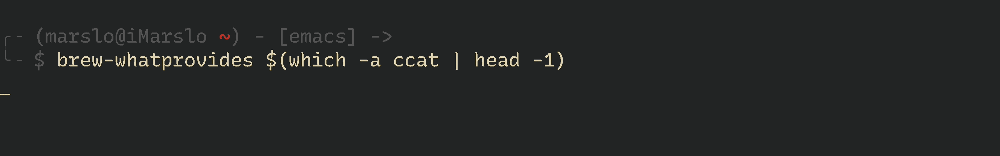
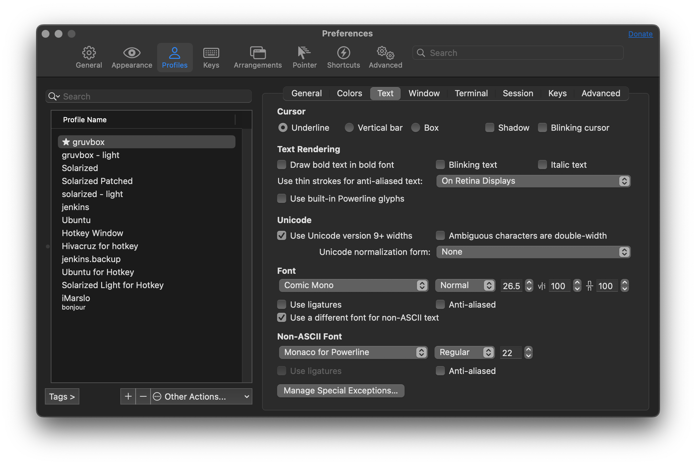
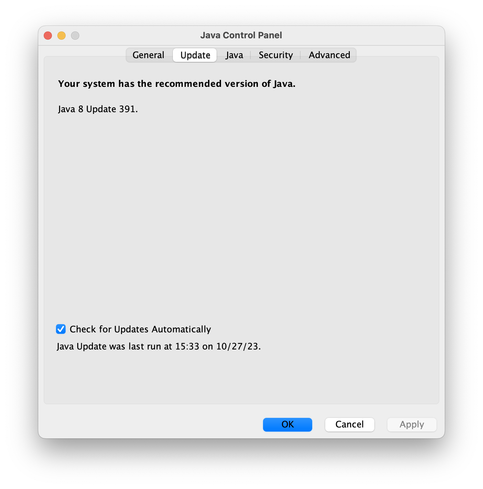
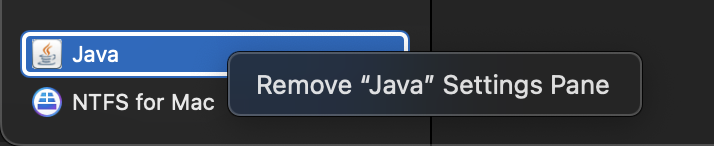

homebrew
[!TIP|label:references:]
homebrew installation
$ /usr/bin/ruby -e "$(curl -fsSL https://raw.githubusercontent.com/Homebrew/install/master/install)"
default source
$ git -C "$(brew --repo)" remote -v origin git@github.com:Homebrew/brew (fetch) origin git@github.com:Homebrew/brew (push) $ git -C "$(brew --repo homebrew/core)" remote -v origin git@github.com:Homebrew/homebrew-core (fetch) origin git@github.com:Homebrew/homebrew-core (push)
alternative sources
-
$ /bin/zsh -c "$(curl -fsSL https://gitee.com/cunkai/HomebrewCN/raw/master/Homebrew.sh)" official
[!NOTE|label:revert back]
$ brew doctor Please note that these warnings are just used to help the Homebrew maintainers with debugging if you file an issue. If everything you use Homebrew for is working fine: please don't worry or file an issue; just ignore this. Thanks! Warning: Suspicious https://github.com/Homebrew/brew git origin remote found. The current git origin is: https://mirrors.ustc.edu.cn/brew.git With a non-standard origin, Homebrew won't update properly. You can solve this by setting the origin remote: git -C "/usr/local/Homebrew" remote set-url origin https://github.com/Homebrew/brew Warning: Suspicious https://github.com/Homebrew/homebrew-core git origin remote found. The current git origin is: https://mirrors.ustc.edu.cn/homebrew-core.git With a non-standard origin, Homebrew won't update properly. You can solve this by setting the origin remote: git -C "/usr/local/Homebrew/Library/Taps/homebrew/homebrew-core" remote set-url origin https://github.com/Homebrew/homebrew-core
$ brew_source='https://github.com/Homebrew'
# brew 程序本身
$ git -C "$(brew --repo)" remote set-url origin ${brew_source}/brew.git
$ git -C "$(brew --repo homebrew/core)" remote set-url origin ${brew_source}/homebrew-core.git
$ git -C "$(brew --repo homebrew/cask)" remote set-url origin ${brew_source}/homebrew-cask.git
$ git -C "$(brew --repo homebrew/cask-fonts)" remote set-url origin ${brew_source}/homebrew-cask-fonts.git
$ git -C "$(brew --repo homebrew/cask-drivers)" remote set-url origin ${brew_source}/homebrew-cask-drivers.git
$ brew update
tsinghua (清华)
$ brew_source='https://mirrors.tuna.tsinghua.edu.cn/git/homebrew' # brew 程序本身 $ git -C "$(brew --repo)" remote set-url origin ${brew_source}/brew.git $ git -C "$(brew --repo homebrew/core)" remote set-url origin ${brew_source}/homebrew-core.git $ git -C "$(brew --repo homebrew/cask)" remote set-url origin ${brew_source}/homebrew-cask.git $ git -C "$(brew --repo homebrew/cask-fonts)" remote set-url origin ${brew_source}/homebrew-cask-fonts.git $ git -C "$(brew --repo homebrew/cask-drivers)" remote set-url origin ${brew_source}/homebrew-cask-drivers.git $ brew updateustc (中科大)
$ brew_source='https://mirrors.ustc.edu.cn' # brew 程序本身 $ git -C "$(brew --repo)" remote set-url origin ${brew_source}/brew.git $ git -C "$(brew --repo homebrew/core)" remote set-url origin ${brew_source}/homebrew-core.git $ git -C "$(brew --repo homebrew/cask)" remote set-url origin ${brew_source}/homebrew-cask.git $ brew updateali (阿里)
$ brew_source='https://mirrors.aliyun.com/homebrew' # brew 程序本身 $ git -C "$(brew --repo)" remote set-url origin ${brew_source}/brew.git $ git -C "$(brew --repo homebrew/core)" remote set-url origin ${brew_source}/homebrew-core.git $ brew updatetencent
$ brew_source='https://mirrors.cloud.tencent.com/homebrew' # brew 程序本身 $ git -C "$(brew --repo)" remote set-url origin ${brew_source}/brew.git $ git -C "$(brew --repo homebrew/core)" remote set-url origin ${brew_source}/homebrew-core.git $ git -C "$(brew --repo homebrew/cask)" remote set-url origin ${brew_source}/homebrew-cask.git $ git -C "$(brew --repo homebrew/cask-fonts)" remote set-url origin ${brew_source}/homebrew-cask-fonts.git $ git -C "$(brew --repo homebrew/cask-drivers)" remote set-url origin ${brew_source}/homebrew-cask-drivers.git $ brwe update
homebrew bottles
[!NOTE|label:address:]
https://mirrors.tuna.tsinghua.edu.cn/homebrew-bottleshttps://mirrors.ustc.edu.cn/homebrew-bottleshttps://mirrors.aliyun.com/homebrew/homebrew-bottleshttps://mirrors.cloud.tencent.com/homebrew-bottles
$ export HOMEBREW_BOTTLE_DOMAIN=https://mirrors.cloud.tencent.com/homebrew-bottles
homebrew caskroom installation
$ brew tap caskroom/versions
$ brew cask outdated
$ brew tap buo/cask-upgrade
$ brew update
$ brew cu --all
home brew cask upgrade
$ brew cu -a -y -f ==> Options Include auto-update (-a): true Include latest (-f): true ==> Updating Homebrew Already up-to-date. ==> Finding outdated apps Cask Current Latest A/U Result 1/10 alfred 3.5.1_883 3.5.1_883 Y [ OK ] 2/10 android-sdk 3859397,26.0.2 3859397,26.0.2 [ OK ] 3/10 dash 4.1.1 4.1.1 Y [ OK ] 4/10 etcher 1.2.1 1.2.1 [ OK ] 5/10 firefox 57.0.2 57.0.2 Y [ OK ] 6/10 imageoptim 1.7.3 1.7.3 Y [ OK ] 7/10 iterm2-beta 3.1.5.beta.1 3.1.5.beta.2 Y [ FORCED ] 8/10 java8 1.8.0_152-b16,aa0333dd3019491ca4f6ddbe78cdb6d0 1.8.0_152-b16,aa0333dd3019491ca4f6ddbe78cdb6d0 [ OK ] 9/10 little-snitch 4.0.4 4.0.4 Y [ OK ] 10/10 mounty latest latest [ OK ] ==> Found outdated apps Cask Current Latest A/U Result 1/1 iterm2-beta 3.1.5.beta.1 3.1.5.beta.2 Y [ FORCED ] ==> Upgrading iterm2-beta to 3.1.5.beta.2 ==> Satisfying dependencies ==> Downloading https://iterm2.com/downloads/beta/iTerm2-3_1_5_beta_2.zip ######################################################################## 100.0% ==> Verifying checksum for Cask iterm2-beta ==> Installing Cask iterm2-beta Warning: It seems there is already an App at '/Applications/iTerm.app'; overwriting. ==> Removing App '/Applications/iTerm.app'. ==> Moving App 'iTerm.app' to '/Applications/iTerm.app'. 🍺 iterm2-beta was successfully installed!- or
$ brew upgrade --cask --greedy
- or
install
[!NOTE] reference:
- Homebrew Formulae - macvim
more on mytools/osx/belloMyOSX
systemlist="imagemagick coreutils bash proctools pstree vnstat ncdu ipcalc htop ack lsof trash" regularlist="wget tmux corkscrew tig ifstat binutils diffutils gawk gnutls gzip less file-formula stow telnet iproute2mac ctags jshon colordiff tree vifm p7zip git mas htop watch jfrog-cli-go youtube-dl etcd mas figlet screenfetch glances bash-completion@2 dos2unix nmap rename renameutils pipenv inetutils hadolint" regularheadlist="shellcheck bats jq gradle-completion git-flow" gnulist="gnu-sed gnu-tar gnu-which grep ed findutils gnu-indent"
# utils
$ brew install imagemagick coreutils moreutils bash proctools pstree vnstat ncdu ipcalc htop ack lsof trash
$ brew install wget tmux corkscrew telnet figlet
$ brew install gnu-sed --with-default-names
$ brew install stow iproute2mac pandoc
$ brew install macvim
$ brew install wdiff --with-gettext
$ brew install less --with-pcre
deprecated (macvim)
$ brew install macvim --with-override-system-vim --HEAD # OR $ brew tap macvim-dev/macvim $ brew install --HEAD macvim-dev/macvim/macvim $ brew linkapps macvim # OR $ brew linkapps # OR $ HOME_APPS = File.expand_path("/Applications") # OR (Using none-link Info.plist and PkgInfo in *.app/Contents/) $ mkdir -p /Applications/gVim.app/Contents $ ln -sf /usr/local/Cellar/macvim/HEAD-a5e0355/gVim.app/Contents/* /Applications/gVim.app/Contents/ $ mv /Applications/gVim.app/Contents/Info.plist{,.link} $ mv /Applications/gVim.app/Contents/PkgInfo{,.link} $ cp /Applications/gVim.app/Contents/Info.plist{.link,} $ cp /Applications/gVim.app/Contents/PkgInfo{.link,}brew upgradeignore specific formulas[!NOTE]
$ brew pin macvim $ brew list --pinned macvim $ brew upgrade Updating Homebrew... Error: Not upgrading 1 pinned package: macvim HEAD-caf7642_1 ==> Upgrading 6 outdated packages: ghostscript 9.53.2 -> 9.53.3 groovy 3.0.5 -> 3.0.6 node 14.12.0 -> 14.13.1 unbound 1.11.0 -> 1.12.0 nmap 7.80_1 -> 7.90 imagemagick 7.0.10-31 -> 7.0.10-34 ...unpin
$ brew unpin macvim $ brew list --pinned
batch install
[!NOTE|label:references:]
$ xargs brew install < list.txt
- make backup
$ brew leaves > list.txt
reinstall/downgrade
[!NOTE|label:references]
- Install icu4c version 63 with Homebrew
- Finding the right version of the formula
- Homebrew install specific version of formula?
error log in node@12.22 after
icu4cupgraded from 71.1 to 72.1:dyld[43773]: Library not loaded: /usr/local/opt/icu4c/lib/libicui18n.71.dylib Referenced from: <57CC95E2-F00F-30F7-9252-4671B72F7B9E> /usr/local/Cellar/node@12/12.22.12_1/bin/node Reason: tried: '/usr/local/opt/icu4c/lib/libicui18n.71.dylib' (no such file), '/System/Volumes/Preboot/Cryptexes/OS/usr/local/opt/icu4c/lib/libicui18n.71.dylib' (no such file), '/usr/local/opt/icu4c/lib/libicui18n.71.dylib' (no such file), '/usr/local/lib/libicui18n.71.dylib' (no such file), '/usr/lib/libicui18n.71.dylib' (no such file, not in dyld cache), '/usr/local/Cellar/icu4c/72.1/lib/libicui18n.71.dylib' (no such file), '/System/Volumes/Preboot/Cryptexes/OS/usr/local/Cellar/icu4c/72.1/lib/libicui18n.71.dylib' (no such file), '/usr/local/Cellar/icu4c/72.1/lib/libicui18n.71.dylib' (no such file), '/usr/local/lib/libicui18n.71.dylib' (no such file), '/usr/lib/libicui18n.71.dylib' (no such file, not in dyld cache)
get formula folder
$ cd $(brew --repo homebrew/core)
# or
$ cd $(brew --prefix)/Homebrew/Library/Taps/homebrew/homebrew-core/Formula # intel
$ cd $(brew --prefix)/Library/Taps/homebrew/homebrew-core/Formula # m1
# or
$ hcore="$(brew --repo homebrew/core)"
$ alias git="git -C ${hcore}"
get proper revision
from git history
$ git log --oneline -5 --follow icu4c.rb 11249c583b5 icu4c: update 72.1 bottle. 025d9d1deaf icu4c 72.1 e3317b86c11 (icu4c-71.1) icu4c: update 71.1 bottle. # proper version 54fb3277728 icu4c: update 71.1 bottle. c013b416f31 icu4c: update homepage url $ git rev-parse e3317b86c11 e3317b86c11c644e88c762e03eb7b310c3337587via
brew extract$ brew extract --force --version=71.1 icu4c homebrew/cask ==> Searching repository history ==> Writing formula for icu4c from revision e3317b8 to: # `e3317b8` is the revision /usr/local/Homebrew/Library/Taps/homebrew/homebrew-cask/Formula/icu4c@71.1.rb $ git -C $(brew --repo homebrew/core) rev-parse e3317b8 e3317b86c11c644e88c762e03eb7b310c3337587
reinstall
[!NOTE]
- without auto update :
HOMEBREW_NO_AUTO_UPDATE=1- without install dependents :
HOMEBREW_NO_INSTALLED_DEPENDENTS_CHECK=1$ brew install --help Unless `HOMEBREW_NO_INSTALLED_DEPENDENTS_CHECK` is set, `brew upgrade` or `brew reinstall` will be run for outdated dependents and dependents with broken linkage, respectively. Unless `HOMEBREW_NO_INSTALL_CLEANUP` is set, `brew cleanup` will then be run for the installed formulae or, every 30 days, for all formulae. Unless `HOMEBREW_NO_INSTALL_UPGRADE` is set, `brew install` formula will upgrade formula if it is already installed but outdated.
via fully-qualified name
$ brew --cache --force-bottle icu4c@71.1 Error: Formulae found in multiple taps: * homebrew/cask/icu4c@71.1 * marslo/icu4c-71-1/icu4c@71.1 Please use the fully-qualified name (e.g. homebrew/cask/icu4c@71.1) to refer to the formula. # will be installed in /usr/local/Cellar/icu4c@71.1 $ HOMEBREW_NO_AUTO_UPDATE=1 brew install homebrew/cask/icu4c@71.1 ==> Fetching homebrew/cask/icu4c@71.1 ==> Downloading https://github.com/unicode-org/icu/releases/download/release-71-1/icu4c-71_1-src.tgz Already downloaded: /Users/marslo/Library/Caches/Homebrew/downloads/ff9ece63f455ff1d6aa066340111e22abfc72c249a7f3d1e492ffef111cb0752--icu4c-71_1-src.tgz ==> Installing icu4c@71.1 from homebrew/cask ... # mapping libs $ ln -sf /usr/local/Cellar/icu4c@71.1/71.1/lib/*.dylib /usr/local/lib/$ HOMEBREW_NO_AUTO_UPDATE=1 brew install homebrew/cask/icu4c@71.1 ==> Fetching homebrew/cask/icu4c@71.1 ==> Downloading https://github.com/unicode-org/icu/releases/download/release-71-1/icu4c-71_1-src.tgz Already downloaded: /Users/marslo/Library/Caches/Homebrew/downloads/ff9ece63f455ff1d6aa066340111e22abfc72c249a7f3d1e492ffef111cb0752--icu4c-71_1-src.tgz ==> Installing icu4c@71.1 from homebrew/cask ==> ./configure --prefix=/usr/local/Cellar/icu4c@71.1/71.1 --disable-samples --disable-tests --enable-static --with-library-bits=64 ==> make ==> make install ==> Caveats icu4c@71.1 is keg-only, which means it was not symlinked into /usr/local, because macOS provides libicucore.dylib (but nothing else). If you need to have icu4c@71.1 first in your PATH, run: echo 'export PATH="/usr/local/opt/icu4c@71.1/bin:$PATH"' >> /Users/marslo/.bash_profile echo 'export PATH="/usr/local/opt/icu4c@71.1/sbin:$PATH"' >> /Users/marslo/.bash_profile For compilers to find icu4c@71.1 you may need to set: export LDFLAGS="-L/usr/local/opt/icu4c@71.1/lib" export CPPFLAGS="-I/usr/local/opt/icu4c@71.1/include" For pkg-config to find icu4c@71.1 you may need to set: export PKG_CONFIG_PATH="/usr/local/opt/icu4c@71.1/lib/pkgconfig" ==> Summary ☕️ 🐸 /usr/local/Cellar/icu4c@71.1/71.1: 262 files, 76.2MB, built in 2 minutes 44 seconds ==> Running `brew cleanup icu4c@71.1`... Disable this behaviour by setting HOMEBREW_NO_INSTALL_CLEANUP. Hide these hints with HOMEBREW_NO_ENV_HINTS (see `man brew`).via url
[!INFO]
- url should be :
https://raw.githubusercontent.com/Homebrew/homebrew-core/<git-revision>/Formula/<formula-name>.rb
$ HOMEBREW_NO_INSTALLED_DEPENDENTS_CHECK=1 \ HOMEBREW_NO_AUTO_UPDATE=1 \ brew reinstall https://raw.githubusercontent.com/Homebrew/homebrew-core/e3317b86c11c644e88c762e03eb7b310c3337587/Formula/icu4c.rb- url should be :
via local cache
$ git log -p -G url.*icu4c -- Formula/icu4c.rb | grep -e ^commit -e https://github.com - url "https://github.com/unicode-org/icu/releases/download/release-71-1/icu4c-71_1-src.tgz" + url "https://github.com/unicode-org/icu/releases/download/release-72-1/icu4c-72_1-src.tgz" - url "https://github.com/unicode-org/icu/releases/download/release-70-1/icu4c-70_1-src.tgz" + url "https://github.com/unicode-org/icu/releases/download/release-71-1/icu4c-71_1-src.tgz" - url "https://github.com/unicode-org/icu/releases/download/release-69-1/icu4c-69_1-src.tgz" + url "https://github.com/unicode-org/icu/releases/download/release-70-1/icu4c-70_1-src.tgz" ... $ curl -O "https://github.com/unicode-org/icu/releases/download/release-71-1/icu4c-71_1-src.tgz" $ mv icu4c-71_1-src.tgz $(brew --cache -s icu4c) $ HOMEBREW_NO_AUTO_UPDATE=1 brew install -f $(brew --cache -s icu4c)via new tap
[!TIP|label:references:]
setup environment (tap)
$ brew tap-new marslo/icu4c-71-1 Initialized empty Git repository in /usr/local/Homebrew/Library/Taps/marslo/homebrew-icu4c-71-1/.git/ .git/hooks/post-commit: line 8: git-stats: command not found [main (root-commit) ed01d30] Create marslo/icu4c-71-1 tap 3 files changed, 90 insertions(+) create mode 100644 .github/workflows/publish.yml create mode 100644 .github/workflows/tests.yml create mode 100644 README.md ==> Created marslo/icu4c-71-1 /usr/local/Homebrew/Library/Taps/marslo/homebrew-icu4c-71-1 # extract $ brew extract --version=71.1 icu4c marslo/icu4c-71-1 ==> Searching repository history ==> Writing formula for icu4c from revision e3317b8 to: /usr/local/Homebrew/Library/Taps/marslo/homebrew-icu4c-71-1/Formula/icu4c@71.1.rbinstall
$ brew search /icu4c/ ==> Formulae homebrew/cask/icu4c@71.1 icu4c ✔ marslo/icu4c-71-1/icu4c@71.1 # will be installed in /usr/local/Cellar/icu4c@71.1 $ HOMEBREW_NO_INSTALLED_DEPENDENTS_CHECK=1 HOMEBREW_NO_AUTO_UPDATE=1 brew install marslo/icu4c-71-1/icu4c@71.1 # mapping libs : https://stackoverflow.com/a/55024755/2940319 $ ln -sf /usr/local/Cellar/icu4c@71.1/71.1/lib/*.dylib /usr/local/lib/ # verify $ ls -Altrh /usr/local/lib | grep icu4c lrwxr-xr-x 1 marslo admin 59 Jun 26 15:34 libicudata.71.1.dylib -> /usr/local/Cellar/icu4c@71.1/71.1/lib/libicudata.71.1.dylib lrwxr-xr-x 1 marslo admin 57 Jun 26 15:34 libicudata.71.dylib -> /usr/local/Cellar/icu4c@71.1/71.1/lib/libicudata.71.dylib lrwxr-xr-x 1 marslo admin 54 Jun 26 15:34 libicudata.dylib -> /usr/local/Cellar/icu4c@71.1/71.1/lib/libicudata.dylib lrwxr-xr-x 1 marslo admin 59 Jun 26 15:34 libicui18n.71.1.dylib -> /usr/local/Cellar/icu4c@71.1/71.1/lib/libicui18n.71.1.dylib lrwxr-xr-x 1 marslo admin 57 Jun 26 15:34 libicui18n.71.dylib -> /usr/local/Cellar/icu4c@71.1/71.1/lib/libicui18n.71.dylib lrwxr-xr-x 1 marslo admin 54 Jun 26 15:34 libicui18n.dylib -> /usr/local/Cellar/icu4c@71.1/71.1/lib/libicui18n.dylib lrwxr-xr-x 1 marslo admin 57 Jun 26 15:34 libicuio.71.1.dylib -> /usr/local/Cellar/icu4c@71.1/71.1/lib/libicuio.71.1.dylib lrwxr-xr-x 1 marslo admin 55 Jun 26 15:34 libicuio.71.dylib -> /usr/local/Cellar/icu4c@71.1/71.1/lib/libicuio.71.dylib lrwxr-xr-x 1 marslo admin 52 Jun 26 15:34 libicuio.dylib -> /usr/local/Cellar/icu4c@71.1/71.1/lib/libicuio.dylib lrwxr-xr-x 1 marslo admin 59 Jun 26 15:34 libicutest.71.1.dylib -> /usr/local/Cellar/icu4c@71.1/71.1/lib/libicutest.71.1.dylib lrwxr-xr-x 1 marslo admin 57 Jun 26 15:34 libicutest.71.dylib -> /usr/local/Cellar/icu4c@71.1/71.1/lib/libicutest.71.dylib lrwxr-xr-x 1 marslo admin 54 Jun 26 15:34 libicutest.dylib -> /usr/local/Cellar/icu4c@71.1/71.1/lib/libicutest.dylib lrwxr-xr-x 1 marslo admin 57 Jun 26 15:34 libicutu.71.1.dylib -> /usr/local/Cellar/icu4c@71.1/71.1/lib/libicutu.71.1.dylib lrwxr-xr-x 1 marslo admin 55 Jun 26 15:34 libicutu.71.dylib -> /usr/local/Cellar/icu4c@71.1/71.1/lib/libicutu.71.dylib lrwxr-xr-x 1 marslo admin 52 Jun 26 15:34 libicutu.dylib -> /usr/local/Cellar/icu4c@71.1/71.1/lib/libicutu.dylib lrwxr-xr-x 1 marslo admin 57 Jun 26 15:34 libicuuc.71.1.dylib -> /usr/local/Cellar/icu4c@71.1/71.1/lib/libicuuc.71.1.dylib lrwxr-xr-x 1 marslo admin 55 Jun 26 15:34 libicuuc.71.dylib -> /usr/local/Cellar/icu4c@71.1/71.1/lib/libicuuc.71.dylib lrwxr-xr-x 1 marslo admin 52 Jun 26 15:34 libicuuc.dylib -> /usr/local/Cellar/icu4c@71.1/71.1/lib/libicuuc.dylib==> Fetching marslo/icu4c-71-1/icu4c@71.1 ==> Downloading https://github.com/unicode-org/icu/releases/download/release-71-1/icu4c-71_1-src.tgz ==> Downloading from https://objects.githubusercontent.com/github-production-release-asset-2e65be/49244766/6a045371-02a9-431c-81b8-be6721ce #################################################################################################################################### 100.0% ==> Reinstalling marslo/icu4c-71-1/icu4c@71.1 Warning: Your Xcode (14.1) is outdated. Please update to Xcode 14.3 (or delete it). Xcode can be updated from the App Store. ==> ./configure --prefix=/usr/local/Cellar/icu4c@71.1/71.1 --disable-samples --disable-tests --enable-static --with-library-bits=64 ==> make ==> make install ==> Caveats icu4c@71.1 is keg-only, which means it was not symlinked into /usr/local, because macOS provides libicucore.dylib (but nothing else). If you need to have icu4c@71.1 first in your PATH, run: echo 'export PATH="/usr/local/opt/icu4c@71.1/bin:$PATH"' >> /Users/marslo/.bash_profile echo 'export PATH="/usr/local/opt/icu4c@71.1/sbin:$PATH"' >> /Users/marslo/.bash_profile For compilers to find icu4c@71.1 you may need to set: export LDFLAGS="-L/usr/local/opt/icu4c@71.1/lib" export CPPFLAGS="-I/usr/local/opt/icu4c@71.1/include" For pkg-config to find icu4c@71.1 you may need to set: export PKG_CONFIG_PATH="/usr/local/opt/icu4c@71.1/lib/pkgconfig" ==> Summary ☕️ 🐸 /usr/local/Cellar/icu4c@71.1/71.1: 262 files, 76.2MB, built in 2 minutes 55 seconds ==> Running `brew cleanup icu4c@71.1`... Disable this behaviour by setting HOMEBREW_NO_INSTALL_CLEANUP. Hide these hints with HOMEBREW_NO_ENV_HINTS (see `man brew`). Warning: HOMEBREW_NO_INSTALLED_DEPENDENTS_CHECK is set: not checking for outdated dependents or dependents with broken linkage!
via formula file (.rb)
$ git checkout -b icu4c-71.1 e3317b86c11 $ HOMEBREW_NO_INSTALLED_DEPENDENTS_CHECK=1 HOMEBREW_NO_AUTO_UPDATE=1 brew reinstall ./icu4c.rb Error: Failed to load cask: ./icu4c.rb Cask 'icu4c' is unreadable: wrong constant name #<Class:0x00007f7a52b2d4e0> Warning: Treating ./icu4c.rb as a formula. ==> Fetching icu4c ==> Downloading https://ghcr.io/v2/homebrew/core/icu4c/manifests/71.1 Already downloaded: /Users/marslo/Library/Caches/Homebrew/downloads/afc80f921cbba7963984e5d24567fbff5b3ba72dfc409cbf7c7f02ccaf0bebab--icu4c-71.1.bottle_manifest.json ==> Downloading https://ghcr.io/v2/homebrew/core/icu4c/raws/sha256:012f882f239863200f0f87150541ea695d609aa14c14a390909d249352ae51f9 Already downloaded: /Users/marslo/Library/Caches/Homebrew/downloads/f0134d8542652b3e26e7a482164caededc27b5ff5925270efdb6f268467f51ae--icu4c--71.1.ventura.bottle.tar.gz ==> Reinstalling icu4c Warning: icu4c 72.1 is available and more recent than version 71.1. ==> Pouring icu4c--71.1.ventura.bottle.tar.gz ☕️ 🐸 /usr/local/Cellar/icu4c/71.1: 262 files, 76.2MB ==> Running `brew cleanup icu4c`... Disable this behaviour by setting HOMEBREW_NO_INSTALL_CLEANUP. Hide these hints with HOMEBREW_NO_ENV_HINTS (see `man brew`). Removing: /Users/marslo/Library/Caches/Homebrew/icu4c--71.1... (28.2MB) Warning: HOMEBREW_NO_INSTALLED_DEPENDENTS_CHECK is set: not checking for outdated dependents or dependents with broken linkage! # revert formula branch $ git checkout masterpin formula
$ brew pin icu4c $ brew list --pinned icu4c
spotlight error
$ xattr -dr com.apple.quarantine MacVim.app
$ osascript -e 'tell application "Finder" to make alias file to POSIX file "/usr/local/opt/macvim/MacVim.app" at POSIX file "/Applications"'
warning
$ brew linkapps macvim Warning: `brew linkapps` has been deprecated and will eventually be removed! Unfortunately `brew linkapps` cannot behave nicely with e.g. Spotlight using either aliases or symlinks and Homebrew formulae do not build "proper" `.app` bundles that can be relocated. Instead, please consider using `brew cask` and migrate formulae using `.app`s to casks. Linking: /usr/local/opt/macvim/MacVim.app Linked 1 app to /Applications$ brew install --HEAD macvim-dev/macvim/macvim ==> Installing macvim from macvim-dev/macvim ==> Installing dependencies for macvim-dev/macvim/macvim: python3, lua ==> Installing macvim-dev/macvim/macvim dependency: python3 ==> Downloading https://homebrew.bintray.com/bottles/python3-3.6.3.high_sierra.bottle.tar.gz ==> Pouring python3-3.6.3.high_sierra.bottle.tar.gz You can try again using `brew postinstall python3` ==> Caveats Pip, setuptools, and wheel have been installed. To update them pip3 install --upgrade pip setuptools wheel You can install Python packages with pip3 install <package> They will install into the site-package directory /usr/local/lib/python3.6/site-packages See: https://docs.brew.sh/Homebrew-and-Python.html ==> Summary 🍺 /usr/local/Cellar/python3/3.6.3: 3,009 files, 48MB ==> Installing macvim-dev/macvim/macvim dependency: lua ==> Downloading https://homebrew.bintray.com/bottles/lua-5.3.4_2.high_sierra.bottle.tar.gz ==> Pouring lua-5.3.4_2.high_sierra.bottle.tar.gz ==> Caveats Please be aware due to the way Luarocks is designed any binaries installed via Luarocks-5.3 AND 5.1 will overwrite each other in /usr/local/bin. This is, for now, unavoidable. If this is troublesome for you, you can build rocks with the `--tree=` command to a special, non-conflicting location and then add that to your `$PATH`. ==> Summary 🍺 /usr/local/Cellar/lua/5.3.4_2: 147 files, 752.9KB ==> Installing macvim-dev/macvim/macvim --HEAD ==> Cloning https://github.com/macvim-dev/macvim.git Updating /Users/marslo/Library/Caches/Homebrew/macvim--git ==> Checking out branch master ==> ./configure --prefix=/usr/local/Cellar/macvim/HEAD-4bf1de8 --with-features=huge --enable-multibyte --enable-terminal --enable-netbeans --with-tlib=ncurses --enable-cscope --enable-termtruecolor --enable-perlinterp=dynamic --enable-pythoninterp=dynamic --enable-python3interp=dynamic --enable-rubyinterp=dynamic --enable-luainterp=dynamic --with-lua-prefix=/usr/local ==> make ==> PATH=/usr/local/Cellar/gettext/0.19.8.1/bin:$PATH MSGFMT=/usr/local/Cellar/gettext/0.19.8.1/bin/msgfmt INSTALL_DATA=install FILEMOD=644 LOCALEDIR=../../src/MacVim/build/Release/MacVim.app/Contents/Resources/vim/runtime/lang make -C src/po install 🍺 /usr/local/Cellar/macvim/HEAD-4bf1de8: 2,183 files, 39.7MB, built in 1 minute 13 seconds
tricky
[!NOTE|label:references]
check formula config files
$ brew -v edit macvim
Editing /usr/local/Homebrew/Library/Taps/homebrew/homebrew-core/Formula/macvim.rb
vim /usr/local/Homebrew/Library/Taps/homebrew/homebrew-core/Formula/macvim.rb
...
system "./configure", "--with-features=huge",
"--enable-multibyte",
"--enable-perlinterp",
"--enable-rubyinterp",
"--enable-tclinterp",
"--enable-terminal",
"--with-tlib=ncurses",
"--with-compiledby=Homebrew",
"--with-local-dir=#{HOMEBREW_PREFIX}",
"--enable-cscope",
"--enable-luainterp",
"--with-lua-prefix=#{Formula["lua"].opt_prefix}",
"--enable-luainterp",
"--enable-python3interp",
"--disable-sparkle"
...
# or
$ brew -v edit macvim-dev/macvim/macvim
manual install formula
$ brew -v edit macvim $ brew -v fetch --deps macvim $ brew -v install --build-from-source macvim $ brew pin macvim
brew debug
- info
$ brew info --analytics doctor
$ brew doctorinfo
$ brew config HOMEBREW_VERSION: 2.6.0-211-g2c77a54 ORIGIN: ${brew_source}/brew HEAD: 2c77a540b522c2eee74af0745851167412adb83b Last commit: 68 minutes ago Core tap ORIGIN: ${brew_source}/homebrew-core Core tap HEAD: 4fb418f9d1b35c372d82d0b49b0f1df9143be236 Core tap last commit: 20 minutes ago Core tap branch: master HOMEBREW_PREFIX: /usr/local HOMEBREW_CASK_OPTS: [] HOMEBREW_EDITOR: vim HOMEBREW_INSTALL_BADGE: ☕️ 🐸 HOMEBREW_MAKE_JOBS: 12 Homebrew Ruby: 2.6.3 => /System/Library/Frameworks/Ruby.framework/Versions/2.6/usr/bin/ruby CPU: dodeca-core 64-bit kabylake Clang: 12.0 build 1200 Git: 2.29.2 => /usr/local/bin/git Curl: 7.64.1 => /usr/bin/curl Java: 1.8.271.09, 1.8.0_211 macOS: 11.0.1-x86_64 CLT: 12.2.0.0.1.1604076827 Xcode: 12.2
pathes
$ brew --repository /usr/local/Homebrew $ brew --prefix python@3 /usr/local/opt/python@3.9 $ brew --cache /Users/marslo/Library/Caches/Homebre $ brew --repo homebrew/core /usr/local/Homebrew/Library/Taps/homebrew/homebrew-core-
# Remove all cache files older than specified days $ brew cleanup --prune=1 # remove all caches $ brew cleanup -s check formula
$ git -C "$(brew --repo homebrew/core)" show a2f05fb0b2^:Formula/rmtrash.rb class Rmtrash < Formula desc "Move files to macOS's Trash" homepage "http://www.nightproductions.net/cli.htm" url "http://www.nightproductions.net/downloads/rmtrash_source.tar.gz" version "0.3.3" ...list the packages installed from taps
$ brew tap-info --installed # or $ brew info $(brew list) | grep '^From:' | sort # or $ brew leaves | xargs brew info | grep '^From:'-
$ brew tap-info macvim-dev/macvim --json | jq -r '.[]|(.formula_names[])' macvim-dev/macvim/macvim # or $ brew tap # get tap name $ TAP='homebrew/cask' $ brew tap-info $TAP --json | jq -r '.[]|(.cask_tokens[])' $ brew tap-info $TAP --json | jq -r '.[]|(.cask_tokens[])' | grep whatsapp homebrew/cask/chatmate-for-whatsapp homebrew/cask/whatsapp
-
manual download and install from local
# download manually due to proxy issue $ curl -O https://downloads.sourceforge.net/gptfdisk/gdisk-1.0.9.pkg $ mv gdisk-1.0.9.pkg $(brew --cache -s gdisk)- check
local cache path $ brew --cache -s <formula>
- check
check homebrew env
$ brew shellenv
export HOMEBREW_PREFIX="/usr/local";
export HOMEBREW_CELLAR="/usr/local/Cellar";
export HOMEBREW_REPOSITORY="/usr/local/Homebrew";
export PATH="/usr/local/bin:/usr/local/sbin${PATH+:$PATH}";
export MANPATH="/usr/local/share/man${MANPATH+:$MANPATH}:";
export INFOPATH="/usr/local/share/info:${INFOPATH:-}";
install dmg
[!NOTE|label:referenees:]
$ curl -O https://desktop.docker.com/mac/main/amd64/Docker.dmg
$ sudo hdiutil attach Docker.dmg
$ sudo /Volumes/Docker/Docker.app/Contents/MacOS/install
$ sudo hdiutil detach /Volumes/Docker
install pkg inside dmg
$ curl -fsSL -O https://download.oracle.com/java/21/latest/jdk-21_macos-x64_bin.dmg
$ hdiutil attach jdk-21_macos-x64_bin.dmg
$ sudo installer -pkg /Volumes/JDK\ 21.0.1/JDK\ 21.0.1.pkg -target /
$ sudo hdiutil detach /Volumes/JDK\ 21.0.1/
system settings
GNU Coreutils
$ brew install coreutils
- GNU Command Line Tools
$ cat /etc/bashrc export PATH="$(brew --prefix coreutils)/libexec/gnubin:/usr/local/bin:$PATH"
bash
$ brew install bash
$ which -a bash
/usr/local/bin/bash
/bin/bash
$ /usr/local/bin/bash --version
GNU bash, version 4.4.12(1)-release (x86_64-apple-darwin17.0.0)
Copyright (C) 2016 Free Software Foundation, Inc.
License GPLv3+: GNU GPL version 3 or later <http://gnu.org/licenses/gpl.html>
This is free software; you are free to change and redistribute it.
There is NO WARRANTY, to the extent permitted by law.
$ /bin/bash --version
GNU bash, version 3.2.57(1)-release (x86_64-apple-darwin17)
Copyright (C) 2007 Free Software Foundation, Inc.
development tools
$ brew install binutils diffutils gawk ctags jshon colordiff tree p7zip gnutls gzip watch
$ brew install jq --devel --HEAD
$ brew install cmake --with-completion --HEAD
$ brew install ed --with-default-names
$ brew install findutils --with-default-names
$ brew install gnu-tar --with-default-names
$ brew install gnu-which --with-default-names
$ brew install grep --with-default-names
$ brew install gnu-indent --with-default-names
$ brew install file-formula
applications(brew, cask and mas)
[!NOTE|label:youtube-dl example:]
# save youtube videos from all chrome tabs $ chrome-cli list links | awk '{ print $2}' | sort -u | grep viewkey >> movies.db # download youtube videos from all chrome tabs $ chrome-cli list links | awk '{ print $2}' | grep viewkey | youtube-dl --external-downloader=aria2c --batch-file - # may cause wtf-mode on networking $ chrome-cli list links | awk '{ print $2}' | grep viewkey | youtube-dl --batch-file -
$ brew tap homebrew/dupes # optional
$ brew tap macvim-dev/macvim
$ brew install vim --override-system-vi
$ brew install macvim --with-override-system-vim --HEAD
# OR
$ brew install --HEAD macvim-dev/macvim/macvim
$ brew install jfrog-cli-go # JFrog CLI OR $ CURL -FL HTTPS://XRAY.JFROG.IO | SH
$ brew install mas # app tools like appstore
$ brew install youtube-dl
$ brew cask install firefox
$ brew cask install google-chrome # or $ brew cask install google-chrome-dev
$ brew cask install moom # instead of mas install 419330170
$ brew cask install dash
$ brew cask install little-snitch
$ brew cask install vlc
$ mas install 1256503523 # System Indicators
$ mas install 836500024 # WeChat
$ mas install 1233593954 # MailMaster
$ mas install 467939042 # Growl
$ mas install 497799835 # Xcode
$ mas install 736473980 # Paint
$ mas install 520993579 # pwSafe
$ mas install 944848654 # NeteaseMusic
$ mas install 419330170 # Moom
$ mas list
1256503523 System Indicators (1.0.6)
836500024 WeChat (2.3.5)
1233593954 MailMaster (2.2.2)
467939042 Growl (2.1.3)
497799835 Xcode (9.2)
736473980 Paint 2 (5.6.5)
520993579 pwSafe (4.11)
944848654 NeteaseMusic (1.5.7)
419330170 Moom (3.2.10)
alternative list
$ find /Applications/*.app/Contents/_MASReceipt/receipt -maxdepth 4 -print | sed 's#.app/Contents/_MASReceipt/receipt#.app#g; s#/Applications/##'
Alfred.app
Growl.app
MailMaster.app
Moom.app
NeteaseMusic.app
Paint S.app
System Indicators.app
WeChat.app
Xcode.app
pwSafe.app
list formula
[!NOTE|references:]
brew leavesshows you all top-level packages; packages that are not dependencies- List of all packages installed using Homebrew
- eguven/brew-list.sh
list all
$ brew leaves
# or
$ brew leaves --installed-on-request
list all packages with dependencies
$ brew deps --tree --installed --full-name
# or
$ brew deps --tree --installed
ack
adns
aften
aom
├── jpeg-xl
│ ├── brotli
│ ├── giflib
│ ├── highway
│ ├── imath
│ ├── jpeg-turbo
│ ├── libpng
│ ├── little-cms2
│ │ ├── jpeg-turbo
│ │ └── libtiff
│ │ ├── jpeg-turbo
│ │ └── zstd
│ │ ├── lz4
│ │ └── xz
...
list all formula size
$ brew list --formula |
xargs -n1 -P8 -I {} \
sh -c "
brew info {} | \
grep -E '[0-9]* files, ' | \
sed 's/^.*[0-9]* files, \(.*\)).*$/{} \1/'
" |
sort -h -r -k2 - |
column -t
ghc 1.8GB
ghc@8.6 1.3GB
go 629.9MB
openjdk 322.6MB
binutils 165.0MB
ghostscript 151.9MB
...
list all formula descriptions
$ brew leaves | xargs -n1 brew desc --eval-all
ack: Search tool like grep, but optimized for programmers
adns: C/C++ resolver library and DNS resolver utilities
autoconf-archive: Collection of over 500 reusable autoconf macros
automake: Tool for generating GNU Standards-compliant Makefiles
bash-completion: Programmable completion for Bash 3.2
bash-completion@2: Programmable completion for Bash 4.2+
...
apt-file list
[!NOTE|label:references:]
$ brew list git [--verbose]
# or
$ brew ls git [--verbose]
/usr/local/Cellar/git/2.43.0/.bottle/etc/gitconfig
/usr/local/Cellar/git/2.43.0/bin/git
/usr/local/Cellar/git/2.43.0/bin/git-cvsserver
/usr/local/Cellar/git/2.43.0/bin/git-receive-pack
/usr/local/Cellar/git/2.43.0/bin/git-shell
/usr/local/Cellar/git/2.43.0/bin/git-upload-archive
/usr/local/Cellar/git/2.43.0/bin/git-upload-pack
/usr/local/Cellar/git/2.43.0/bin/scalar
/usr/local/Cellar/git/2.43.0/etc/bash_completion.d/ (2 files)
/usr/local/Cellar/git/2.43.0/libexec/git-core/ (195 files)
/usr/local/Cellar/git/2.43.0/share/doc/ (1025 files)
/usr/local/Cellar/git/2.43.0/share/git-core/ (163 files)
/usr/local/Cellar/git/2.43.0/share/gitweb/ (5 files)
/usr/local/Cellar/git/2.43.0/share/locale/ (19 files)
/usr/local/Cellar/git/2.43.0/share/man/ (195 files)
/usr/local/Cellar/git/2.43.0/share/perl5/ (20 files)
/usr/local/Cellar/git/2.43.0/share/zsh/ (2 files)
whatprovides
brew which-formula
[!NOTE|label:references:]
$ brew tap homebrew/command-not-found
$ brew which-formula ts
moreutils
task-spooler
brew-whatprovides
$ cat >> ~/.bash_profile << EOF
brew-whatprovides() {
if [[ 0 -ne $# ]]; then
_p="$*";
_realp="$(realpath ${_p})";
while read -r pkg; do
echo -ne "\r$(tput el)>> searching in ${pkg} ..."
if brew list --verbose "${pkg}" 2>/dev/null | grep "${_realp}" >/dev/null 2>&1; then
echo -ne "\r$(tput el)>> \033[0;32m${_p}\033[0m ( \033[0;37m${_realp}\033[0m ) provided by \033[0;33m${pkg}\033[0m";
break;
fi;
done < <(brew leaves);
fi
}
EOF
or
$ touch /usr/local/bin/brew-whatprovides $ cat > /usr/local/bin/brew-whatprovides << EOF #!/usr/bin/env bash brew-whatprovides() { if [[ 0 -ne $# ]]; then _p="$*"; _realp="$(realpath ${_p})"; while read -r pkg; do echo -ne "\r$(tput el)>> searching in ${pkg} ..." if brew list --verbose "${pkg}" 2>/dev/null | grep "${_realp}" >/dev/null 2>&1; then echo -ne "\r$(tput el)>> \033[0;32m${_p}\033[0m ( \033[0;37m${_realp}\033[0m ) provided by \033[0;33m${pkg}\033[0m"; break; fi; done < <(brew leaves); fi } brew-whatprovides "$*" EOF $ bash +x /usr/local/bin/brew-whatprovidesresult
# in progress $ brew-whatprovides $(which -a ts | head -1) >> searching in ffmpeg ... # this line is update timely # result $ brew-whatprovides $(which -a ts | head -1) >> /usr/local/bin/ts ( /usr/local/Cellar/moreutils/0.67/bin/ts ) provided by moreutils 1.7.2.1 -- brew whatprovides oneline cmd
$ path='/path/to/file' $ brew list --formula | xargs -P8 -i bash -c " if brew list --verbose {} 2>/dev/null | grep \"$(realpath ${path})\" >/dev/null 2>&1; then echo \">> ${path} is provided by {}\"; fi "
tools
java
[!NOTE|label:references:]
various versions
/Library/Java/JavaVirtualMachines$ ls -Altrh /Library/Java/JavaVirtualMachines total 0 drwxr-xr-x 3 root wheel 96 Dec 14 2020 jdk1.8.0_271.jdk drwxr-xr-x 3 root wheel 96 Jul 19 2022 jdk-11.0.15.1.jdk drwxr-xr-x 3 root wheel 96 Oct 31 20:52 jdk-21.jdk drwxr-xr-x 3 root wheel 96 Oct 31 21:06 jdk-17.jdkdefault
JAVA_HOME$ export JAVA_HOME=$(/usr/libexec/java_home) # or $ export JAVA_HOME=$(/usr/libexec/java_home -v 21) $ /usr/libexec/java_home /Library/Java/JavaVirtualMachines/jdk-21.jdk/Contents/Homejava 17
$ export JAVA_HOME=$(/usr/libexec/java_home -v 17) # details $ /usr/libexec/java_home -v 17 /Library/Java/JavaVirtualMachines/jdk-17.jdk/Contents/Home $ /usr/libexec/java_home -v 17 --exec java -version java version "17.0.9" 2023-10-17 LTS Java(TM) SE Runtime Environment (build 17.0.9+11-LTS-201) Java HotSpot(TM) 64-Bit Server VM (build 17.0.9+11-LTS-201, mixed mode, sharingjava 11
$ export JAVA_HOME=$(/usr/libexec/java_home -v 11) # details $ /usr/libexec/java_home -v 11 /Library/Java/JavaVirtualMachines/jdk-11.0.15.1.jdk/Contents/Homejava 8
$ export JAVA_HOME=$(/usr/libexec/java_home -v 1.8) $ /usr/libexec/java_home -v 1.8 /Library/Java/JavaVirtualMachines/jdk1.8.0_271.jdk/Contents/Home
openjdk
# jdk 21
$ brew install openjdk
# jdk 17
$ brew install openjdk@17
# jdk 11
$ brew install openjdk@11
JAVA_HOME
# java 21 $ export JAVA_HOME="$(brew --prefix java) # java 17 $ export JAVA_HOME=$(brew --prefix openjdk@17) # java 11 $ export JAVA_HOME=$(brew --prefix openjdk@11)
remove old version Java
[!NOTE|label:references:]
sudo rm -fr /Library/Internet\ Plug-Ins/JavaAppletPlugin.plugin
sudo rm -fr /Library/PreferencePanes/JavaControlPanel.prefPane
sudo rm -fr ~/Library/Application\ Support/Oracle/Java
accessory
Alfred
[!NOTE]
- workflow | Alfred Gallery
- units convertor
- calculate
- system
- dev tools
iTerm2
- Install Shell Integration
$ curl -L https://iterm2.com/shell_integration/install_shell_integration_and_utilities.sh | bash - more settings
powerline
[!NOTE|label:references]
install
[!NOTE|label:references:]
$ pip install --user powerline-status $ cat >> ~/.bash_profile << EOF powerline-daemon -q POWERLINE_BASH_CONTINUATION=1 POWERLINE_BASH_SELECT=1 source /Users/marslo/Library/Python/3.11/lib/python/site-packages/powerline/bindings/bash/powerline.sh EOF $ mkdir ~/.config/powerline $ cp -r /Users/marslo/Library/Python/3.11/lib/python/site-packages/powerline/config_files/ ~/.config/powerline/settings in iTerm2:
Use a different font for non-ASCII text 1.7.2.2 -- non-ascii in iterm2 font
[!TIP]

backgroundmusic
$ (set -eo pipefail; URL='https://github.com/kyleneideck/BackgroundMusic/archive/master.tar.gz'; \
cd $(mktemp -d); echo Downloading $URL to $(pwd); curl -qfL# $URL | gzcat - | tar x && \
/bin/bash BackgroundMusic-master/build_and_install.sh -w && rm -rf BackgroundMusic-master)
logs
$ (set -eo pipefail; URL='https://github.com/kyleneideck/BackgroundMusic/archive/master.tar.gz'; \ -> cd $(mktemp -d); echo Downloading $URL to $(pwd); curl -qfL# $URL | gzcat - | tar x && \ -> /bin/bash BackgroundMusic-master/build_and_install.sh -w && rm -rf BackgroundMusic-master) Downloading https://github.com/kyleneideck/BackgroundMusic/archive/master.tar.gz to /var/folders/dm/dblpttpn3c5cdvg_g2rthhvh0000gn/T/tmp.mixzjjg1 ######################################################################## 100.0% About to install Background Music. Please pause all audio, if you can. This script will install: - /Applications/Background Music.app - /Library/Audio/Plug-Ins/HAL/Background Music Device.driver - /Library/Application Support/Background Music/BGMXPCHelper.xpc - /Library/LaunchDaemons/com.bearisdriving.BGM.XPCHelper.plist Continue (y/N)? y Password: [1/3] Installing the virtual audio device Background Music Device.driver to /Library/Audio/Plug-Ins/HAL [2/3] Installing BGMXPCHelper.xpc to /Library/Application Support/Background Music [3/3] Installing Background Music.app to /Applications Restarting coreaudiod to load the virtual audio device. Launching Background Music. Done.
mac cli
$ sh -c "$(curl -fsSL https://raw.githubusercontent.com/marslo/mac-cli/master/mac-cli/tools/install)"
example
$ mac bluetooth:status Bluetooth: ON $ mac speedtest Testing internet connection speed... 4.2 Mbps ↓
others
markdown-toc
$ npm i -g --save markdown-toc --verbose
doctoc
$ npm install -g doctoc
- usage
$ doctoc --gitlab my_osx.md $ doctoc --github --maxlevel 3 */*.md
gitbook
$ npm install gitbook-cli -g
- usage
$ gitbook init $ gitbook serve $ gitbook build
gitbook-summary
$ npm install -g gitbook-summary
- usage:
$ book sm -d -t 'life is hard, make it easier'
npm-completion
$ npm i -g npm-completion
- usage
$ PATH_TO_NPM_COMPLETION="/usr/local/lib/node_modules/npm-completion" $ source $PATH_TO_NPM_COMPLETION/npm-completion.sh
reveal.js
$ git clone git@github.com:hakimel/reveal.js.git
$ cd reveal.js
$ npm i -g
- usage
$ npm start -- --port=8081 (http://localhost:8081)
gnomon
$ npm i -g gnomon
- usage
$ ping 127.0.0.1 | gnomon 0.0066s PING 127.0.0.1 (127.0.0.1): 56 data bytes 0.8694s 18:13:43.219648 64 bytes from 127.0.0.1: icmp_seq=0 ttl=64 time=0.048 ms 0.9999s 18:13:44.221333 64 bytes from 127.0.0.1: icmp_seq=1 ttl=64 time=0.116 ms 1.0004s 18:13:45.221475 64 bytes from 127.0.0.1: icmp_seq=2 ttl=64 time=0.088 ms 1.0047s 18:13:46.222231 64 bytes from 127.0.0.1: icmp_seq=3 ttl=64 time=0.059 ms 1.0001s 18:13:47.226847 64 bytes from 127.0.0.1: icmp_seq=4 ttl=64 time=0.101 ms 1.0049s 18:13:48.227248 64 bytes from 127.0.0.1: icmp_seq=5 ttl=64 time=0.100 ms 1.0049s 18:13:49.232354 64 bytes from 127.0.0.1: icmp_seq=6 ttl=64 time=0.093 ms 0.5038s 18:13:50.237433 64 bytes from 127.0.0.1: icmp_seq=7 ttl=64 time=0.091 ms
iStats
$ sudo gem install iStats -n /usr/local/bin
usage
$ istats all --- CPU Stats --- CPU temp: 57.19°C ▁▂▃▅▆▇ --- Fan Stats --- Total fans in system: 2 Fan 0 speed: 2146 RPM ▁▂▃▅▆▇ Fan 1 speed: 1985 RPM ▁▂▃▅▆▇ --- Battery Stats --- Battery health: unknown Cycle count: 34 ▁▂▃▅▆▇ 3.4% Max cycles: 1000 Current charge: 6073 mAh ▁▂▃▅▆▇ 100% Maximum charge: 6236 mAh ▁▂▃▅▆▇ 85.0% Design capacity: 7336 mAh Battery temp: 35.8°C For more stats run `istats extra` and follow the instructions.
trouble shooting
failed to connect to raw.githubusercontent.com port 443: connection refused
- issue
failed to connect to raw.githubusercontent.com port 443: connection refused solution
$ sudo bash -c " echo '199.232.28.133 raw.githubusercontent.com' >> /etc/hosts"- checking host IP address via https://www.ipaddress.com/
additional
reference:
sudo bash -c cat >> /etc/hosts << EOF
# GitHub Start
52.74.223.119 github.com
192.30.253.119 gist.github.com
54.169.195.247 api.github.com
185.199.111.153 assets-cdn.github.com
199.232.28.133 raw.githubusercontent.com
# 199.232.96.133 raw.githubusercontent.com
# 151.101.76.133 raw.githubusercontent.com
151.101.76.133 gist.githubusercontent.com
151.101.76.133 cloud.githubusercontent.com
151.101.76.133 camo.githubusercontent.com
151.101.76.133 avatars0.githubusercontent.com
151.101.76.133 avatars1.githubusercontent.com
151.101.76.133 avatars2.githubusercontent.com
151.101.76.133 avatars3.githubusercontent.com
151.101.76.133 avatars4.githubusercontent.com
151.101.76.133 avatars5.githubusercontent.com
151.101.76.133 avatars6.githubusercontent.com
151.101.76.133 avatars7.githubusercontent.com
151.101.76.133 avatars8.githubusercontent.com
# GitHub End
EOF
failure in brew search for cask formula
issue
$ brew install --cask firefox-developer-edition Error: Cask 'firefox-developer-edition' is unavailable: No Cask with this name exists. $ brew search firefox ==> Casks firefox multifirefoxsolution
$ git -C $(brew --repo homebrew/cask-versions) st On branch master Your branch is up to date with 'origin/master'. Changes not staged for commit: (use "git add/rm <file>..." to update what will be committed) (use "git restore <file>..." to discard changes in working directory) deleted: Casks/firefox-beta.rb deleted: Casks/firefox-developer-edition.rb deleted: Casks/firefox-esr.rb deleted: Casks/firefox-nightly.rb no changes added to commit (use "git add" and/or "git commit -a") $ git -C $(brew --repo homebrew/cask-versions) reset --hard HEAD is now at 67d487bd6 Update dotnet-preview from 6.0.0-preview.4.21253.7,bab80210-ac54-44fa-bf41-7474c6371cf2:eadcd657b93e347d08bc33c59bd60835 to 6.0.0-preview.5.21301.5,c326f2e1-10ee-482e-9871-5fb8de7f7777:dda8203d3b58e56efeca4a7248cdea67 (#11293)
A fatal error has been detected by the Java Runtime Environment : SIGILL (0x4)
error message
$ groovyConsole 2023-11-01 18:49:18.068 java[17232:171223] WARNING: Secure coding is automatically enabled for restorable state! However, not on all supported macOS versions of this application. Opt-in to secure coding explicitly by implementing NSApplicationDelegate.applicationSupportsSecureRestorableState:. # # A fatal error has been detected by the Java Runtime Environment: # # SIGILL (0x4) at pc=0x00007ff8144c2bc5, pid=17232, tid=259 # # JRE version: OpenJDK Runtime Environment Homebrew (17.0.9) (build 17.0.9+0) # Java VM: OpenJDK 64-Bit Server VM Homebrew (17.0.9+0, mixed mode, sharing, tiered, compressed oops, compressed class ptrs, g1 gc, bsd-amd64) # Problematic frame: # C [AppKit+0xc92bc5] _NSCarbonMenuCrashIfNeeded+0x258 # # No core dump will be written. Core dumps have been disabled. To enable core dumping, try "ulimit -c unlimited" before starting Java again # # An error report file with more information is saved as: # /Users/marslo/hs_err_pid17232.log # # If you would like to submit a bug report, please visit: # https://github.com/Homebrew/homebrew-core/issues # The crash happened outside the Java Virtual Machine in native code. # See problematic frame for where to report the bug. # Abort trap: 6# A fatal error has been detected by the Java Runtime Environment: # # SIGILL (0x4) at pc=0x00007ff804d60b73, pid=35543, tid=259 # # JRE version: OpenJDK Runtime Environment Homebrew (21.0.1) (build 21.0.1) # Java VM: OpenJDK 64-Bit Server VM Homebrew (21.0.1, mixed mode, sharing, tiered, compressed oops, compressed class ptrs, g1 gc, bsd-amd64) # Problematic frame: # C [AppKit+0xc8fb73] _NSCarbonMenuCrashIfNeeded+0x258 # # No core dump will be written. Core dumps have been disabled. To enable core dumping, try "ulimit -c unlimited" before starting Java again # # If you would like to submit a bug report, please visit: # https://github.com/Homebrew/homebrew-core/issues # The crash happened outside the Java Virtual Machine in native code. # See problematic frame for where to report the bug. # --------------- S U M M A R Y ------------ Command Line: -Dsun.awt.keepWorkingSetOnMinimize=true -Dscript.name=/usr/local/opt/groovy/libexec/bin/groovyConsole -Dprogram.name=groovyConsole -Dgroovy.starter.conf=/usr/local/opt/groovy/libexec/conf/groovy-starter.conf -Dgroovy.home=/usr/local/opt/groovy/libexec -Dtools.jar=/usr/local/opt/openjdk/lib/tools.jar org.codehaus.groovy.tools.GroovyStarter --main groovy.console.ui.Console --conf /usr/local/opt/groovy/libexec/conf/groovy-starter.conf --classpath .:/usr/local/opt/openjdk/lib/tools.jar:/usr/local/opt/openjdk/lib/dt.jar:/usr/local/opt/groovy/libexec/lib:. Host: "MacBookPro15,1" x86_64 2200 MHz, 12 cores, 16G, Darwin 23.0.0, macOS 14.0 (23A344) Time: Tue Oct 31 20:37:27 2023 PDT elapsed time: 6.043659 seconds (0d 0h 0m 6s) --------------- T H R E A D --------------- Current thread (0x00007f7c35a9e600): JavaThread "AppKit Thread" daemon [_thread_in_native, id=259, stack(0x00007ff7b0184000,0x00007ff7b0984000) (8192K)] Stack: [0x00007ff7b0184000,0x00007ff7b0984000], sp=0x00007ff7b097c360, free space=8160k Native frames: (J=compiled Java code, j=interpreted, Vv=VM code, C=native code) C [AppKit+0xc8fb73] _NSCarbonMenuCrashIfNeeded+0x258 C [AppKit+0xc8f898] _NSGetCarbonMenu+0xf C [JavaRuntimeSupport+0x307b] -[JRSMenu installCarbonEventHandlers:]+0xcc C [CoreFoundation+0x717b0] __CFNOTIFICATIONCENTER_IS_CALLING_OUT_TO_AN_OBSERVER__+0x89 C [CoreFoundation+0x102436] ___CFXRegistrationPost_block_invoke+0x58 C [CoreFoundation+0x102380] _CFXRegistrationPost+0x214 C [CoreFoundation+0x416bb] _CFXNotificationPost+0x2aa C [Foundation+0x87a7] -[NSNotificationCenter postNotificationName:object:userInfo:]+0x52 C [AppKit+0x3361c] -[NSMenu insertItem:atIndex:]+0x2e0 C [Foundation+0x7c2d5] __NSThreadPerformPerform+0xb2 C [CoreFoundation+0x7c337] __CFRUNLOOP_IS_CALLING_OUT_TO_A_SOURCE0_PERFORM_FUNCTION__+0x11 C [CoreFoundation+0x7c2d9] __CFRunLoopDoSource0+0x9d C [CoreFoundation+0x7c0a4] __CFRunLoopDoSources0+0xd7 C [CoreFoundation+0x7ad21] __CFRunLoopRun+0x397 C [CoreFoundation+0x7a372] CFRunLoopRunSpecific+0x22d C [HIToolbox+0x309d9] RunCurrentEventLoopInMode+0x124 C [HIToolbox+0x307e6] ReceiveNextEventCommon+0x299 C [HIToolbox+0x30531] _BlockUntilNextEventMatchingListInModeWithFilter+0x42 C [AppKit+0x3f0c5] _DPSNextEvent+0x370 C [AppKit+0x930150] -[NSApplication(NSEventRouting) _nextEventMatchingEventMask:untilDate:inMode:dequeue:]+0x518 C [libosxapp.dylib+0x86aa] -[NSApplicationAWT nextEventMatchingMask:untilDate:inMode:dequeue:]+0x79 C [AppKit+0x3063a] -[NSApplication run]+0x25b C [libosxapp.dylib+0x8491] +[NSApplicationAWT runAWTLoopWithApp:]+0xa5 C [libawt_lwawt.dylib+0x719af] +[AWTStarter starter:headless:]+0x1fc C [libosxapp.dylib+0x9fa1] +[ThreadUtilities invokeBlockCopy:]+0xf C [Foundation+0x7c2d5] __NSThreadPerformPerform+0xb2 C [CoreFoundation+0x7c337] __CFRUNLOOP_IS_CALLING_OUT_TO_A_SOURCE0_PERFORM_FUNCTION__+0x11 C [CoreFoundation+0x7c2d9] __CFRunLoopDoSource0+0x9d C [CoreFoundation+0x7c0a4] __CFRunLoopDoSources0+0xd7 C [CoreFoundation+0x7ad21] __CFRunLoopRun+0x397 C [CoreFoundation+0x7a372] CFRunLoopRunSpecific+0x22d C [libjli.dylib+0xb7ee] CreateExecutionEnvironment+0x17d C [libjli.dylib+0x78b5] JLI_Launch+0x4d5 C [java+0x3c11] main+0x163 C [dyld+0x63a6] start+0x796 siginfo: si_signo: 4 (SIGILL), si_code: 1 (ILL_ILLOPC), si_addr: 0x00007ff804d60b73 Registers: RAX=0x0000000000000000, RBX=0x000060000292ae60, RCX=0x0000000000000000, RDX=0x0000000000000000 RSP=0x00007ff7b097c360, RBP=0x00007ff7b097c470, RSI=0x000000001f08000c, RDI=0x0000000000000000 R8 =0x0000000000000000, R9 =0x0000000000000000, R10=0x0000000000000032, R11=0x0000000000000202 R12=0x0000000000000005, R13=0x00007ff800664900, R14=0x0000000000000000, R15=0x00007ff820780f15 RIP=0x00007ff804d60b73, EFLAGS=0x0000000000010206, ERR=0x0000000000000000 TRAPNO=0x0000000000000006 Register to memory mapping: RAX=0x0 is null RBX=0x000060000292ae60 points into unknown readable memory: 0x011dfff84401b391 | 91 b3 01 44 f8 ff 1d 01 RCX=0x0 is null RDX=0x0 is null RSP=0x00007ff7b097c360 is pointing into the stack for thread: 0x00007f7c35a9e600 RBP=0x00007ff7b097c470 is pointing into the stack for thread: 0x00007f7c35a9e600 RSI=0x000000001f08000c is an unknown value RDI=0x0 is null R8 =0x0 is null R9 =0x0 is null R10=0x0000000000000032 is an unknown value R11=0x0000000000000202 is an unknown value R12=0x0000000000000005 is an unknown value R13=0x00007ff800664900: objc_msgSend+0 in /usr/lib/libobjc.A.dylib at 0x00007ff80065e000 R14=0x0 is null R15=0x00007ff820780f15 points into unknown readable memory: 63 6f 6e Top of Stack: (sp=0x00007ff7b097c360) 0x00007ff7b097c360: 0000000000000010 00007ff7b097c3c0 0x00007ff7b097c370: 00007ff7b097c378 0000000000000023 0x00007ff7b097c380: 0000000000000000 0000000000000000 0x00007ff7b097c390: 0000000000000000 0000000000000000 0x00007ff7b097c3a0: 0000000000000023 0000000000000010 0x00007ff7b097c3b0: 0000600000e94060 0000000000000010 0x00007ff7b097c3c0: 000060000292ad80 000060000292adf0 0x00007ff7b097c3d0: 0000600002e8e300 000060000336d560 0x00007ff7b097c3e0: 0000600002e8e180 000060000292ae60 0x00007ff7b097c3f0: 000060000292aed0 000060000336e130 0x00007ff7b097c400: 000060000292af40 000060000292afb0 0x00007ff7b097c410: 000060000336e1c0 000060000292b020 0x00007ff7b097c420: 000060000292b090 000060000292b100 0x00007ff7b097c430: 000060000292b170 000060000292b1e0 0x00007ff7b097c440: 7a953567d9950019 0000600002117340 0x00007ff7b097c450: 00007ff800664900 0000000000041c00 0x00007ff7b097c460: 0000600002117340 00007ff820775786 0x00007ff7b097c470: 00007ff7b097c490 00007ff804d60898 0x00007ff7b097c480: 0000600002117340 0000600002117340 0x00007ff7b097c490: 00007ff7b097c500 00007ffb032b507b 0x00007ff7b097c4a0: 0000000000000000 0000000000000000 0x00007ff7b097c4b0: 0000000000000000 0000000000000000 0x00007ff7b097c4c0: 0000000000000000 0000000000000000 0x00007ff7b097c4d0: 3fe7f7f820000000 7a953567d9950019 0x00007ff7b097c4e0: 00007ff822b87d48 0000600000025080 0x00007ff7b097c4f0: 0000600002117340 0000000000000000 0x00007ff7b097c500: 00007ff7b097c540 00007ff800aff7b0 0x00007ff7b097c510: 7a953567d9950019 00007ff7b097c5b0 0x00007ff7b097c520: 0000600002117300 0000000000041c00 0x00007ff7b097c530: 00007ff7b097c6b8 0000000000000000 0x00007ff7b097c540: 00007ff7b097c570 00007ff800b90436 0x00007ff7b097c550: 00007ff822b87d48 0000000000000000 Instructions: (pc=0x00007ff804d60b73) 0x00007ff804d60a73: 89 c7 41 ff d5 48 89 85 48 ff ff ff 48 85 c0 0f 0x00007ff804d60a83: 84 df 00 00 00 48 8d 85 f0 fe ff ff 48 8b 40 10 0x00007ff804d60a93: 48 8b 00 48 89 85 30 ff ff ff 45 31 f6 4c 8b 3d 0x00007ff804d60aa3: 19 5e a0 3e 48 8b 85 48 ff ff ff 4c 01 f0 48 89 0x00007ff804d60ab3: 85 38 ff ff ff 45 31 e4 48 8b 85 00 ff ff ff 48 0x00007ff804d60ac3: 8b 8d 30 ff ff ff 48 39 08 74 0c 48 8b bd 40 ff 0x00007ff804d60ad3: ff ff e8 10 01 36 00 48 8b 85 f8 fe ff ff 4a 8b 0x00007ff804d60ae3: 1c e0 48 89 df 4c 89 fe 48 8d 15 b6 1b 84 3e 41 0x00007ff804d60af3: ff d5 84 c0 0f 85 0a ff ff ff 48 89 df 4c 89 fe 0x00007ff804d60b03: 48 8d 15 be 1b 84 3e 41 ff d5 84 c0 0f 85 f2 fe 0x00007ff804d60b13: ff ff 4b 8d 04 26 48 83 f8 04 7f 48 49 ff c4 4c 0x00007ff804d60b23: 39 a5 48 ff ff ff 75 90 41 b8 10 00 00 00 48 8b 0x00007ff804d60b33: bd 40 ff ff ff 48 8b 35 a9 68 a0 3e 48 8d 95 f0 0x00007ff804d60b43: fe ff ff 48 8d 8d 50 ff ff ff 41 ff d5 4c 8b b5 0x00007ff804d60b53: 38 ff ff ff 48 89 85 48 ff ff ff 48 85 c0 0f 85 0x00007ff804d60b63: 39 ff ff ff 48 8d 3d 9d 88 4a 00 e8 7d fa 35 00 0x00007ff804d60b73: 0f 0b e8 c2 f9 35 00 55 48 89 e5 41 56 53 41 89 0x00007ff804d60b83: f6 48 89 fb e8 8f fd ff ff 45 84 f6 74 35 48 8b 0x00007ff804d60b93: 35 68 f4 9e 3e 48 89 df ff 15 3f 76 7a 3e 48 89 0x00007ff804d60ba3: c3 48 8b 3d 5d d7 63 3d e8 be 00 36 00 48 89 df 0x00007ff804d60bb3: 48 89 c6 e8 a1 00 36 00 84 c0 74 13 31 c0 5b 41 0x00007ff804d60bc3: 5e 5d c3 48 89 df 5b 41 5e 5d e9 b7 fc ff ff 48 0x00007ff804d60bd3: 8b 35 9f f7 9e 3e 48 8d 15 08 1a 84 3e 48 89 df 0x00007ff804d60be3: ff 15 f7 75 7a 3e 84 c0 74 27 48 8b 35 dc 18 9f 0x00007ff804d60bf3: 3e 4c 8b 35 e5 75 7a 3e 48 89 df 41 ff d6 48 8b 0x00007ff804d60c03: 35 c8 22 9f 3e 48 89 df 4c 89 f0 5b 41 5e 5d ff 0x00007ff804d60c13: e0 48 8b 35 d5 3e 9e 3e 48 8d 15 c6 19 84 3e 48 0x00007ff804d60c23: 89 df b9 01 00 00 00 41 b8 01 00 00 00 5b 41 5e 0x00007ff804d60c33: 5d ff 25 a6 75 7a 3e 55 48 89 e5 e8 61 46 aa ff 0x00007ff804d60c43: 84 c0 74 15 48 8b 3d 82 cc 63 3d 48 8b 35 9b 37 0x00007ff804d60c53: 9e 3e 5d ff 25 84 75 7a 3e 5d e9 02 f5 35 00 55 0x00007ff804d60c63: 48 89 e5 41 56 53 48 83 ec 20 48 8b 05 8c 4f 7a Stack slot to memory mapping: stack at sp + 0 slots: 0x0000000000000010 is an unknown value stack at sp + 1 slots: 0x00007ff7b097c3c0 is pointing into the stack for thread: 0x00007f7c35a9e600 stack at sp + 2 slots: 0x00007ff7b097c378 is pointing into the stack for thread: 0x00007f7c35a9e600 stack at sp + 3 slots: 0x0000000000000023 is an unknown value stack at sp + 4 slots: 0x0 is null stack at sp + 5 slots: 0x0 is null stack at sp + 6 slots: 0x0 is null stack at sp + 7 slots: 0x0 is null --------------- P R O C E S S --------------- Threads class SMR info: _java_thread_list=0x00006000000d6740, length=21, elements={ 0x00007f7c36008200, 0x00007f7c34811a00, 0x00007f7c328a3200, 0x00007f7c34009200, 0x00007f7c34009a00, 0x00007f7c3400e600, 0x00007f7c328a3a00, 0x00007f7c3400ee00, 0x00007f7c38008800, 0x00007f7c3580be00, 0x00007f7c341d5a00, 0x00007f7c3385da00, 0x00007f7c34a90800, 0x00007f7c35a9e600, 0x00007f7c32c0a800, 0x00007f7c32b41000, 0x00007f7c343d3e00, 0x00007f7c358ee200, 0x00007f7c35e0a000, 0x00007f7c3668f400, 0x00007f7c33a12800 } Java Threads: ( => current thread ) 0x00007f7c36008200 JavaThread "main" [_thread_in_native, id=8451, stack(0x000070000ad10000,0x000070000ae10000) (1024K)] 0x00007f7c34811a00 JavaThread "Reference Handler" daemon [_thread_blocked, id=23299, stack(0x000070000b62e000,0x000070000b72e000) (1024K)] 0x00007f7c328a3200 JavaThread "Finalizer" daemon [_thread_blocked, id=32003, stack(0x000070000b731000,0x000070000b831000) (1024K)] 0x00007f7c34009200 JavaThread "Signal Dispatcher" daemon [_thread_blocked, id=23811, stack(0x000070000b834000,0x000070000b934000) (1024K)] 0x00007f7c34009a00 JavaThread "Service Thread" daemon [_thread_blocked, id=24323, stack(0x000070000b937000,0x000070000ba37000) (1024K)] 0x00007f7c3400e600 JavaThread "Monitor Deflation Thread" daemon [_thread_blocked, id=31747, stack(0x000070000ba3a000,0x000070000bb3a000) (1024K)] 0x00007f7c328a3a00 JavaThread "C2 CompilerThread0" daemon [_thread_blocked, id=24835, stack(0x000070000bb3d000,0x000070000bc3d000) (1024K)] 0x00007f7c3400ee00 JavaThread "C1 CompilerThread0" daemon [_thread_blocked, id=30979, stack(0x000070000bc40000,0x000070000bd40000) (1024K)] 0x00007f7c38008800 JavaThread "Notification Thread" daemon [_thread_blocked, id=25091, stack(0x000070000bd43000,0x000070000be43000) (1024K)] 0x00007f7c3580be00 JavaThread "Common-Cleaner" daemon [_thread_blocked, id=25603, stack(0x000070000be46000,0x000070000bf46000) (1024K)] 0x00007f7c341d5a00 JavaThread "Timer-0" daemon [_thread_blocked, id=27907, stack(0x000070000c55b000,0x000070000c65b000) (1024K)] 0x00007f7c3385da00 JavaThread "ForkJoinPool.commonPool-worker-1" daemon [_thread_blocked, id=28931, stack(0x000070000c65e000,0x000070000c75e000) (1024K)] 0x00007f7c34a90800 JavaThread "ForkJoinPool.commonPool-worker-2" daemon [_thread_blocked, id=28675, stack(0x000070000c761000,0x000070000c861000) (1024K)] =>0x00007f7c35a9e600 JavaThread "AppKit Thread" daemon [_thread_in_native, id=259, stack(0x00007ff7b0184000,0x00007ff7b0984000) (8192K)] 0x00007f7c32c0a800 JavaThread "Image Fetcher 0" daemon [_thread_blocked, id=75011, stack(0x000070000d38e000,0x000070000d48e000) (1024K)] 0x00007f7c32b41000 JavaThread "Java2D Queue Flusher" daemon [_thread_blocked, id=129803, stack(0x000070000d491000,0x000070000d591000) (1024K)] 0x00007f7c343d3e00 JavaThread "Java2D Disposer" daemon [_thread_blocked, id=128771, stack(0x000070000d594000,0x000070000d694000) (1024K)] 0x00007f7c358ee200 JavaThread "AWT-Shutdown" [_thread_blocked, id=128531, stack(0x000070000bf49000,0x000070000c049000) (1024K)] 0x00007f7c35e0a000 JavaThread "AWT-EventQueue-0" [_thread_blocked, id=44299, stack(0x000070000c967000,0x000070000ca67000) (1024K)] 0x00007f7c3668f400 JavaThread "Event Dispatch Thread" daemon [_thread_blocked, id=81683, stack(0x000070000cd7c000,0x000070000ce7c000) (1024K)] 0x00007f7c33a12800 JavaThread "C2 CompilerThread1" daemon [_thread_blocked, id=80147, stack(0x000070000d697000,0x000070000d797000) (1024K)] Total: 21 Other Threads: 0x00007f7c33206470 VMThread "VM Thread" [id=18435, stack(0x000070000b425000,0x000070000b525000) (1024K)] 0x00007f7c32709da0 WatcherThread "VM Periodic Task Thread" [id=20995, stack(0x000070000b322000,0x000070000b422000) (1024K)] 0x00007f7c33107da0 WorkerThread "GC Thread#0" [id=13827, stack(0x000070000ae13000,0x000070000af13000) (1024K)] 0x00007f7c33110530 WorkerThread "GC Thread#1" [id=26115, stack(0x000070000c04c000,0x000070000c14c000) (1024K)] 0x00007f7c33110aa0 WorkerThread "GC Thread#2" [id=26627, stack(0x000070000c14f000,0x000070000c24f000) (1024K)] 0x00007f7c33111010 WorkerThread "GC Thread#3" [id=29955, stack(0x000070000c252000,0x000070000c352000) (1024K)] 0x00007f7c33111580 WorkerThread "GC Thread#4" [id=27139, stack(0x000070000c355000,0x000070000c455000) (1024K)] 0x00007f7c33510830 WorkerThread "GC Thread#5" [id=27395, stack(0x000070000c458000,0x000070000c558000) (1024K)] 0x00007f7c3322dd40 WorkerThread "GC Thread#6" [id=32771, stack(0x000070000c864000,0x000070000c964000) (1024K)] 0x00007f7c32754290 WorkerThread "GC Thread#7" [id=76551, stack(0x000070000ce7f000,0x000070000cf7f000) (1024K)] 0x00007f7c32754800 WorkerThread "GC Thread#8" [id=74247, stack(0x000070000cf82000,0x000070000d082000) (1024K)] 0x00007f7c3343a040 WorkerThread "GC Thread#9" [id=76299, stack(0x000070000d085000,0x000070000d185000) (1024K)] 0x00007f7c327044c0 ConcurrentGCThread "G1 Main Marker" [id=13571, stack(0x000070000af16000,0x000070000b016000) (1024K)] 0x00007f7c32704e30 WorkerThread "G1 Conc#0" [id=12803, stack(0x000070000b019000,0x000070000b119000) (1024K)] 0x00007f7c32755440 WorkerThread "G1 Conc#1" [id=76035, stack(0x000070000d188000,0x000070000d288000) (1024K)] 0x00007f7c327557e0 WorkerThread "G1 Conc#2" [id=75523, stack(0x000070000d28b000,0x000070000d38b000) (1024K)] 0x00007f7c32892a00 ConcurrentGCThread "G1 Refine#0" [id=16387, stack(0x000070000b11c000,0x000070000b21c000) (1024K)] 0x00007f7c32708550 ConcurrentGCThread "G1 Service" [id=16643, stack(0x000070000b21f000,0x000070000b31f000) (1024K)] Total: 18 Threads with active compile tasks: Total: 0 VM state: not at safepoint (normal execution) VM Mutex/Monitor currently owned by a thread: None Heap address: 0x0000000700000000, size: 4096 MB, Compressed Oops mode: Zero based, Oop shift amount: 3 CDS archive(s) mapped at: [0x0000000130000000-0x0000000130ca1000-0x0000000130ca1000), size 13242368, SharedBaseAddress: 0x0000000130000000, ArchiveRelocationMode: 1. Compressed class space mapped at: 0x0000000131000000-0x0000000171000000, reserved size: 1073741824 Narrow klass base: 0x0000000130000000, Narrow klass shift: 0, Narrow klass range: 0x100000000 GC Precious Log: CardTable entry size: 512 Card Set container configuration: InlinePtr #cards 4 size 8 Array Of Cards #cards 16 size 48 Howl #buckets 8 coarsen threshold 3686 Howl Bitmap #cards 512 size 80 coarsen threshold 460 Card regions per heap region 1 cards per card region 4096 CPUs: 12 total, 12 available Memory: 16384M Large Page Support: Disabled NUMA Support: Disabled Compressed Oops: Enabled (Zero based) Heap Region Size: 2M Heap Min Capacity: 8M Heap Initial Capacity: 256M Heap Max Capacity: 4G Pre-touch: Disabled Parallel Workers: 10 Concurrent Workers: 3 Concurrent Refinement Workers: 10 Periodic GC: Disabled Heap: garbage-first heap total 102400K, used 68456K [0x0000000700000000, 0x0000000800000000) region size 2048K, 22 young (45056K), 4 survivors (8192K) Metaspace used 34673K, committed 35712K, reserved 1114112K class space used 4388K, committed 4864K, reserved 1048576K Heap Regions: E=young(eden), S=young(survivor), O=old, HS=humongous(starts), HC=humongous(continues), CS=collection set, F=free, TAMS=top-at-mark-start, PB=parsable bottom | 0|0x0000000700000000, 0x0000000700200000, 0x0000000700200000|100%| O| |TAMS 0x0000000700000000| PB 0x0000000700000000| Untracked | 1|0x0000000700200000, 0x0000000700400000, 0x0000000700400000|100%| O| |TAMS 0x0000000700200000| PB 0x0000000700200000| Untracked | 2|0x0000000700400000, 0x0000000700600000, 0x0000000700600000|100%| O| |TAMS 0x0000000700400000| PB 0x0000000700400000| Untracked | 3|0x0000000700600000, 0x0000000700800000, 0x0000000700800000|100%| O| |TAMS 0x0000000700600000| PB 0x0000000700600000| Untracked | 4|0x0000000700800000, 0x0000000700a00000, 0x0000000700a00000|100%| O| |TAMS 0x0000000700800000| PB 0x0000000700800000| Untracked | 5|0x0000000700a00000, 0x0000000700c00000, 0x0000000700c00000|100%| O| |TAMS 0x0000000700a00000| PB 0x0000000700a00000| Untracked | 6|0x0000000700c00000, 0x0000000700e00000, 0x0000000700e00000|100%| O| |TAMS 0x0000000700c00000| PB 0x0000000700c00000| Untracked | 7|0x0000000700e00000, 0x0000000700e443a0, 0x0000000701000000| 13%| O|Cm|TAMS 0x0000000700e00000| PB 0x0000000700e00000| Complete | 8|0x0000000701000000, 0x0000000701200000, 0x0000000701200000|100%| O| |TAMS 0x0000000701000000| PB 0x0000000701000000| Untracked | 9|0x0000000701200000, 0x0000000701400000, 0x0000000701400000|100%| O| |TAMS 0x0000000701200000| PB 0x0000000701200000| Untracked | 10|0x0000000701400000, 0x0000000701600000, 0x0000000701600000|100%| O| |TAMS 0x0000000701400000| PB 0x0000000701400000| Untracked | 11|0x0000000701600000, 0x0000000701800000, 0x0000000701800000|100%| O| |TAMS 0x0000000701600000| PB 0x0000000701600000| Untracked | 12|0x0000000701800000, 0x0000000701992c00, 0x0000000701a00000| 78%| O| |TAMS 0x0000000701800000| PB 0x0000000701800000| Untracked | 13|0x0000000701a00000, 0x0000000701a00000, 0x0000000701c00000| 0%| F| |TAMS 0x0000000701a00000| PB 0x0000000701a00000| Untracked | 14|0x0000000701c00000, 0x0000000701c00000, 0x0000000701e00000| 0%| F| |TAMS 0x0000000701c00000| PB 0x0000000701c00000| Untracked | 15|0x0000000701e00000, 0x0000000702000000, 0x0000000702000000|100%| S|CS|TAMS 0x0000000701e00000| PB 0x0000000701e00000| Complete | 16|0x0000000702000000, 0x0000000702200000, 0x0000000702200000|100%| S|CS|TAMS 0x0000000702000000| PB 0x0000000702000000| Complete | 17|0x0000000702200000, 0x0000000702400000, 0x0000000702400000|100%| S|CS|TAMS 0x0000000702200000| PB 0x0000000702200000| Complete | 18|0x0000000702400000, 0x0000000702600000, 0x0000000702600000|100%| S|CS|TAMS 0x0000000702400000| PB 0x0000000702400000| Complete | 19|0x0000000702600000, 0x0000000702600000, 0x0000000702800000| 0%| F| |TAMS 0x0000000702600000| PB 0x0000000702600000| Untracked | 20|0x0000000702800000, 0x0000000702800000, 0x0000000702a00000| 0%| F| |TAMS 0x0000000702800000| PB 0x0000000702800000| Untracked | 21|0x0000000702a00000, 0x0000000702a00000, 0x0000000702c00000| 0%| F| |TAMS 0x0000000702a00000| PB 0x0000000702a00000| Untracked | 22|0x0000000702c00000, 0x0000000702c00000, 0x0000000702e00000| 0%| F| |TAMS 0x0000000702c00000| PB 0x0000000702c00000| Untracked | 23|0x0000000702e00000, 0x0000000702e00000, 0x0000000703000000| 0%| F| |TAMS 0x0000000702e00000| PB 0x0000000702e00000| Untracked | 24|0x0000000703000000, 0x0000000703000000, 0x0000000703200000| 0%| F| |TAMS 0x0000000703000000| PB 0x0000000703000000| Untracked | 25|0x0000000703200000, 0x0000000703200000, 0x0000000703400000| 0%| F| |TAMS 0x0000000703200000| PB 0x0000000703200000| Untracked | 26|0x0000000703400000, 0x0000000703400000, 0x0000000703600000| 0%| F| |TAMS 0x0000000703400000| PB 0x0000000703400000| Untracked | 27|0x0000000703600000, 0x0000000703600000, 0x0000000703800000| 0%| F| |TAMS 0x0000000703600000| PB 0x0000000703600000| Untracked | 28|0x0000000703800000, 0x0000000703800000, 0x0000000703a00000| 0%| F| |TAMS 0x0000000703800000| PB 0x0000000703800000| Untracked | 29|0x0000000703a00000, 0x0000000703a00000, 0x0000000703c00000| 0%| F| |TAMS 0x0000000703a00000| PB 0x0000000703a00000| Untracked | 30|0x0000000703c00000, 0x0000000703c00000, 0x0000000703e00000| 0%| F| |TAMS 0x0000000703c00000| PB 0x0000000703c00000| Untracked | 31|0x0000000703e00000, 0x0000000703f30e08, 0x0000000704000000| 59%| E| |TAMS 0x0000000703e00000| PB 0x0000000703e00000| Complete | 32|0x0000000704000000, 0x0000000704200000, 0x0000000704200000|100%| E|CS|TAMS 0x0000000704000000| PB 0x0000000704000000| Complete | 33|0x0000000704200000, 0x0000000704400000, 0x0000000704400000|100%| E|CS|TAMS 0x0000000704200000| PB 0x0000000704200000| Complete | 34|0x0000000704400000, 0x0000000704600000, 0x0000000704600000|100%| E|CS|TAMS 0x0000000704400000| PB 0x0000000704400000| Complete | 35|0x0000000704600000, 0x0000000704800000, 0x0000000704800000|100%| E|CS|TAMS 0x0000000704600000| PB 0x0000000704600000| Complete | 36|0x0000000704800000, 0x0000000704a00000, 0x0000000704a00000|100%| E|CS|TAMS 0x0000000704800000| PB 0x0000000704800000| Complete | 37|0x0000000704a00000, 0x0000000704c00000, 0x0000000704c00000|100%| E|CS|TAMS 0x0000000704a00000| PB 0x0000000704a00000| Complete | 38|0x0000000704c00000, 0x0000000704e00000, 0x0000000704e00000|100%| E|CS|TAMS 0x0000000704c00000| PB 0x0000000704c00000| Complete | 39|0x0000000704e00000, 0x0000000705000000, 0x0000000705000000|100%| E|CS|TAMS 0x0000000704e00000| PB 0x0000000704e00000| Complete | 40|0x0000000705000000, 0x0000000705200000, 0x0000000705200000|100%| E|CS|TAMS 0x0000000705000000| PB 0x0000000705000000| Complete | 41|0x0000000705200000, 0x0000000705400000, 0x0000000705400000|100%| E|CS|TAMS 0x0000000705200000| PB 0x0000000705200000| Complete | 42|0x0000000705400000, 0x0000000705600000, 0x0000000705600000|100%| E|CS|TAMS 0x0000000705400000| PB 0x0000000705400000| Complete | 120|0x000000070f000000, 0x000000070f200000, 0x000000070f200000|100%| E|CS|TAMS 0x000000070f000000| PB 0x000000070f000000| Complete | 121|0x000000070f200000, 0x000000070f400000, 0x000000070f400000|100%| E|CS|TAMS 0x000000070f200000| PB 0x000000070f200000| Complete | 122|0x000000070f400000, 0x000000070f600000, 0x000000070f600000|100%| E|CS|TAMS 0x000000070f400000| PB 0x000000070f400000| Complete | 123|0x000000070f600000, 0x000000070f800000, 0x000000070f800000|100%| E|CS|TAMS 0x000000070f600000| PB 0x000000070f600000| Complete | 124|0x000000070f800000, 0x000000070fa00000, 0x000000070fa00000|100%| E|CS|TAMS 0x000000070f800000| PB 0x000000070f800000| Complete | 127|0x000000070fe00000, 0x0000000710000000, 0x0000000710000000|100%| E|CS|TAMS 0x000000070fe00000| PB 0x000000070fe00000| Complete |2047|0x00000007ffe00000, 0x00000007fff030b8, 0x0000000800000000| 50%| O| |TAMS 0x00000007ffe00000| PB 0x00000007ffe00000| Untracked Card table byte_map: [0x00000001290db000,0x00000001298db000] _byte_map_base: 0x00000001258db000 Marking Bits: (CMBitMap*) 0x00007f7c3280a210 Bits: [0x00000001298db000, 0x000000012d8db000) Polling page: 0x000000010f5a4000 Metaspace: Usage: Non-class: 29.58 MB used. Class: 4.29 MB used. Both: 33.86 MB used. Virtual space: Non-class space: 64.00 MB reserved, 30.12 MB ( 47%) committed, 1 nodes. Class space: 1.00 GB reserved, 4.75 MB ( <1%) committed, 1 nodes. Both: 1.06 GB reserved, 34.88 MB ( 3%) committed. Chunk freelists: Non-Class: 1013.00 KB Class: 11.17 MB Both: 12.16 MB MaxMetaspaceSize: unlimited CompressedClassSpaceSize: 1.00 GB Initial GC threshold: 21.00 MB Current GC threshold: 35.12 MB CDS: on - commit_granule_bytes: 65536. - commit_granule_words: 8192. - virtual_space_node_default_size: 8388608. - enlarge_chunks_in_place: 1. - use_allocation_guard: 0. Internal statistics: num_allocs_failed_limit: 3. num_arena_births: 1542. num_arena_deaths: 0. num_vsnodes_births: 2. num_vsnodes_deaths: 0. num_space_committed: 558. num_space_uncommitted: 0. num_chunks_returned_to_freelist: 3. num_chunks_taken_from_freelist: 2604. num_chunk_merges: 0. num_chunk_splits: 1648. num_chunks_enlarged: 897. num_inconsistent_stats: 0. CodeHeap 'non-profiled nmethods': size=120028Kb used=3150Kb max_used=3150Kb free=116877Kb bounds [0x0000000121ba4000, 0x0000000121ec4000, 0x00000001290db000] CodeHeap 'profiled nmethods': size=120028Kb used=11104Kb max_used=11104Kb free=108924Kb bounds [0x000000011a0db000, 0x000000011abbb000, 0x0000000121612000] CodeHeap 'non-nmethods': size=5704Kb used=2125Kb max_used=2151Kb free=3578Kb bounds [0x0000000121612000, 0x0000000121882000, 0x0000000121ba4000] total_blobs=6371 nmethods=5487 adapters=789 compilation: enabled stopped_count=0, restarted_count=0 full_count=0 Compilation events (20 events): Event: 6.025 Thread 0x00007f7c3400ee00 nmethod 5474 0x000000011abac110 code [0x000000011abac2e0, 0x000000011abac8a0] Event: 6.025 Thread 0x00007f7c3400ee00 5475 ! 3 java.lang.invoke.InnerClassLambdaMetafactory::buildCallSite (150 bytes) Event: 6.026 Thread 0x00007f7c3400ee00 nmethod 5475 0x000000011abaca10 code [0x000000011abace00, 0x000000011abae850] Event: 6.026 Thread 0x00007f7c3400ee00 5476 3 java.lang.invoke.InnerClassLambdaMetafactory::spinInnerClass (118 bytes) Event: 6.026 Thread 0x00007f7c3400ee00 nmethod 5476 0x000000011abaf590 code [0x000000011abaf760, 0x000000011abafa60] Event: 6.026 Thread 0x00007f7c3400ee00 5477 3 java.lang.invoke.LambdaProxyClassArchive::find (63 bytes) Event: 6.026 Thread 0x00007f7c3400ee00 nmethod 5477 0x000000011abafb90 code [0x000000011abafda0, 0x000000011abb0588] Event: 6.026 Thread 0x00007f7c3400ee00 5478 3 java.lang.invoke.LambdaProxyClassArchive::loadedByBuiltinLoader (22 bytes) Event: 6.026 Thread 0x00007f7c3400ee00 nmethod 5478 0x000000011abb0810 code [0x000000011abb09e0, 0x000000011abb0df0] Event: 6.026 Thread 0x00007f7c3400ee00 5480 3 java.lang.invoke.InnerClassLambdaMetafactory::lambdaClassName (48 bytes) Event: 6.027 Thread 0x00007f7c3400ee00 nmethod 5480 0x000000011abb0f10 code [0x000000011abb1160, 0x000000011abb1830] Event: 6.031 Thread 0x00007f7c3400ee00 5482 3 java.lang.invoke.LambdaForm$DMH/0x0000000131130000::invokeStatic (31 bytes) Event: 6.031 Thread 0x00007f7c3400ee00 nmethod 5482 0x000000011abb1b10 code [0x000000011abb1ce0, 0x000000011abb2118] Event: 6.031 Thread 0x00007f7c3400ee00 5483 3 java.util.concurrent.ConcurrentHashMap::sumCount (60 bytes) Event: 6.031 Thread 0x00007f7c3400ee00 nmethod 5483 0x000000011abb2210 code [0x000000011abb23c0, 0x000000011abb2628] Event: 6.032 Thread 0x00007f7c328a3a00 5486 4 jdk.internal.org.objectweb.asm.MethodWriter::visitMethodInsn (191 bytes) Event: 6.033 Thread 0x00007f7c3400ee00 5488 3 java.util.concurrent.ConcurrentHashMap$ValueIterator::<init> (12 bytes) Event: 6.033 Thread 0x00007f7c3400ee00 nmethod 5488 0x000000011abb2790 code [0x000000011abb2940, 0x000000011abb2a78] Event: 6.033 Thread 0x00007f7c3400ee00 5491 3 java.lang.invoke.LambdaForm$NamedFunction::<init> (7 bytes) Event: 6.033 Thread 0x00007f7c3400ee00 nmethod 5491 0x000000011abb2b10 code [0x000000011abb2cc0, 0x000000011abb2f18] GC Heap History (10 events): Event: 0.632 GC heap before {Heap before GC invocations=0 (full 0): garbage-first heap total 264192K, used 21516K [0x0000000700000000, 0x0000000800000000) region size 2048K, 11 young (22528K), 0 survivors (0K) Metaspace used 7251K, committed 7424K, reserved 1114112K class space used 736K, committed 832K, reserved 1048576K } Event: 0.637 GC heap after {Heap after GC invocations=1 (full 0): garbage-first heap total 264192K, used 6251K [0x0000000700000000, 0x0000000800000000) region size 2048K, 2 young (4096K), 2 survivors (4096K) Metaspace used 7251K, committed 7424K, reserved 1114112K class space used 736K, committed 832K, reserved 1048576K } Event: 0.966 GC heap before {Heap before GC invocations=1 (full 0): garbage-first heap total 264192K, used 30827K [0x0000000700000000, 0x0000000800000000) region size 2048K, 14 young (28672K), 2 survivors (4096K) Metaspace used 10490K, committed 10880K, reserved 1114112K class space used 1142K, committed 1344K, reserved 1048576K } Event: 0.972 GC heap after {Heap after GC invocations=2 (full 0): garbage-first heap total 264192K, used 10759K [0x0000000700000000, 0x0000000800000000) region size 2048K, 2 young (4096K), 2 survivors (4096K) Metaspace used 10490K, committed 10880K, reserved 1114112K class space used 1142K, committed 1344K, reserved 1048576K } Event: 2.687 GC heap before {Heap before GC invocations=2 (full 0): garbage-first heap total 264192K, used 72199K [0x0000000700000000, 0x0000000800000000) region size 2048K, 32 young (65536K), 2 survivors (4096K) Metaspace used 20480K, committed 21120K, reserved 1114112K class space used 2419K, committed 2688K, reserved 1048576K } Event: 2.703 GC heap after {Heap after GC invocations=3 (full 0): garbage-first heap total 264192K, used 23837K [0x0000000700000000, 0x0000000800000000) region size 2048K, 4 young (8192K), 4 survivors (8192K) Metaspace used 20480K, committed 21120K, reserved 1114112K class space used 2419K, committed 2688K, reserved 1048576K } Event: 2.804 GC heap before {Heap before GC invocations=3 (full 0): garbage-first heap total 264192K, used 27933K [0x0000000700000000, 0x0000000800000000) region size 2048K, 7 young (14336K), 4 survivors (8192K) Metaspace used 20806K, committed 21504K, reserved 1114112K class space used 2469K, committed 2816K, reserved 1048576K } Event: 2.812 GC heap after {Heap after GC invocations=4 (full 0): garbage-first heap total 264192K, used 25885K [0x0000000700000000, 0x0000000800000000) region size 2048K, 5 young (10240K), 5 survivors (10240K) Metaspace used 20806K, committed 21504K, reserved 1114112K class space used 2469K, committed 2816K, reserved 1048576K } Event: 3.900 GC heap before {Heap before GC invocations=5 (full 0): garbage-first heap total 102400K, used 77085K [0x0000000700000000, 0x0000000800000000) region size 2048K, 30 young (61440K), 5 survivors (10240K) Metaspace used 28344K, committed 29184K, reserved 1114112K class space used 3543K, committed 3904K, reserved 1048576K } Event: 3.916 GC heap after {Heap after GC invocations=6 (full 0): garbage-first heap total 102400K, used 33640K [0x0000000700000000, 0x0000000800000000) region size 2048K, 4 young (8192K), 4 survivors (8192K) Metaspace used 28344K, committed 29184K, reserved 1114112K class space used 3543K, committed 3904K, reserved 1048576K } Dll operation events (11 events): Event: 0.006 Loaded shared library /usr/local/Cellar/openjdk/21.0.1/libexec/openjdk.jdk/Contents/Home/lib/libjava.dylib Event: 0.046 Loaded shared library /usr/local/Cellar/openjdk/21.0.1/libexec/openjdk.jdk/Contents/Home/lib/libnio.dylib Event: 0.061 Loaded shared library /usr/local/Cellar/openjdk/21.0.1/libexec/openjdk.jdk/Contents/Home/lib/libzip.dylib Event: 0.253 Loaded shared library /usr/local/Cellar/openjdk/21.0.1/libexec/openjdk.jdk/Contents/Home/lib/libjimage.dylib Event: 0.757 Loaded shared library /usr/local/Cellar/openjdk/21.0.1/libexec/openjdk.jdk/Contents/Home/lib/libprefs.dylib Event: 0.897 Loaded shared library /usr/local/Cellar/openjdk/21.0.1/libexec/openjdk.jdk/Contents/Home/lib/libnet.dylib Event: 1.057 Loaded shared library /usr/local/Cellar/openjdk/21.0.1/libexec/openjdk.jdk/Contents/Home/lib/libverify.dylib Event: 1.408 Loaded shared library /usr/local/Cellar/openjdk/21.0.1/libexec/openjdk.jdk/Contents/Home/lib/libawt.dylib Event: 1.436 Loaded shared library /usr/local/Cellar/openjdk/21.0.1/libexec/openjdk.jdk/Contents/Home/lib/libawt_lwawt.dylib Event: 1.470 Loaded shared library /usr/local/Cellar/openjdk/21.0.1/libexec/openjdk.jdk/Contents/Home/lib/libfontmanager.dylib Event: 1.954 Loaded shared library /usr/local/Cellar/openjdk/21.0.1/libexec/openjdk.jdk/Contents/Home/lib/libosxui.dylib Deoptimization events (20 events): Event: 5.929 Thread 0x00007f7c36008200 Uncommon trap: trap_request=0xffffffde fr.pc=0x0000000121debcac relative=0x0000000000000dac Event: 5.929 Thread 0x00007f7c36008200 Uncommon trap: reason=class_check action=maybe_recompile pc=0x0000000121debcac method=java.util.concurrent.ConcurrentHashMap.putVal(Ljava/lang/Object;Ljava/lang/Object;Z)Ljava/lang/Object; @ 159 c2 Event: 5.929 Thread 0x00007f7c36008200 DEOPT PACKING pc=0x0000000121debcac sp=0x000070000ae0c300 Event: 5.929 Thread 0x00007f7c36008200 DEOPT UNPACKING pc=0x0000000121665f99 sp=0x000070000ae0c280 mode 2 Event: 5.932 Thread 0x00007f7c36008200 Uncommon trap: trap_request=0xffffffde fr.pc=0x0000000121debcac relative=0x0000000000000dac Event: 5.932 Thread 0x00007f7c36008200 Uncommon trap: reason=class_check action=maybe_recompile pc=0x0000000121debcac method=java.util.concurrent.ConcurrentHashMap.putVal(Ljava/lang/Object;Ljava/lang/Object;Z)Ljava/lang/Object; @ 159 c2 Event: 5.932 Thread 0x00007f7c36008200 DEOPT PACKING pc=0x0000000121debcac sp=0x000070000ae0c300 Event: 5.932 Thread 0x00007f7c36008200 DEOPT UNPACKING pc=0x0000000121665f99 sp=0x000070000ae0c280 mode 2 Event: 5.943 Thread 0x00007f7c36008200 Uncommon trap: trap_request=0xffffffde fr.pc=0x0000000121c57908 relative=0x00000000000004e8 Event: 5.943 Thread 0x00007f7c36008200 Uncommon trap: reason=class_check action=maybe_recompile pc=0x0000000121c57908 method=java.util.stream.ReferencePipeline.forEachWithCancel(Ljava/util/Spliterator;Ljava/util/stream/Sink;)Z @ 1 c2 Event: 5.943 Thread 0x00007f7c36008200 DEOPT PACKING pc=0x0000000121c57908 sp=0x000070000ae0bfe0 Event: 5.943 Thread 0x00007f7c36008200 DEOPT UNPACKING pc=0x0000000121665f99 sp=0x000070000ae0bfa0 mode 2 Event: 5.943 Thread 0x00007f7c36008200 Uncommon trap: trap_request=0xffffffde fr.pc=0x0000000121c57908 relative=0x00000000000004e8 Event: 5.943 Thread 0x00007f7c36008200 Uncommon trap: reason=class_check action=maybe_recompile pc=0x0000000121c57908 method=java.util.stream.ReferencePipeline.forEachWithCancel(Ljava/util/Spliterator;Ljava/util/stream/Sink;)Z @ 1 c2 Event: 5.943 Thread 0x00007f7c36008200 DEOPT PACKING pc=0x0000000121c57908 sp=0x000070000ae0c0a0 Event: 5.943 Thread 0x00007f7c36008200 DEOPT UNPACKING pc=0x0000000121665f99 sp=0x000070000ae0c060 mode 2 Event: 6.016 Thread 0x00007f7c35a9e600 Uncommon trap: trap_request=0xffffff45 fr.pc=0x0000000121e5f1ec relative=0x000000000000012c Event: 6.016 Thread 0x00007f7c35a9e600 Uncommon trap: reason=unstable_if action=reinterpret pc=0x0000000121e5f1ec method=java.lang.StrictMath.floorOrCeil(DDDD)D @ 115 c2 Event: 6.016 Thread 0x00007f7c35a9e600 DEOPT PACKING pc=0x0000000121e5f1ec sp=0x00007ff7b097b5c0 Event: 6.016 Thread 0x00007f7c35a9e600 DEOPT UNPACKING pc=0x0000000121665f99 sp=0x00007ff7b097b508 mode 2 Classes loaded (20 events): Event: 6.029 Loading class java/awt/MenuItem$1 Event: 6.029 Loading class sun/awt/AWTAccessor$MenuItemAccessor Event: 6.029 Loading class sun/awt/AWTAccessor$MenuItemAccessor done Event: 6.029 Loading class java/awt/MenuItem$1 done Event: 6.029 Loading class java/awt/Menu$1 Event: 6.029 Loading class sun/awt/AWTAccessor$MenuAccessor Event: 6.029 Loading class sun/awt/AWTAccessor$MenuAccessor done Event: 6.029 Loading class java/awt/Menu$1 done Event: 6.029 Loading class com/apple/laf/ScreenMenu$1 Event: 6.029 Loading class com/apple/laf/ScreenMenu$1 done Event: 6.029 Loading class com/apple/laf/ScreenMenuItem Event: 6.029 Loading class com/apple/laf/ScreenMenuItem done Event: 6.029 Loading class com/apple/laf/ScreenMenuItemUI Event: 6.029 Loading class com/apple/laf/ScreenMenuItemUI done Event: 6.030 Loading class sun/lwawt/macosx/CMenu Event: 6.030 Loading class sun/lwawt/macosx/CMenuItem Event: 6.030 Loading class sun/lwawt/macosx/CMenuItem done Event: 6.030 Loading class sun/lwawt/macosx/CMenu done Event: 6.030 Loading class sun/lwawt/macosx/CFRetainedResource$CFNativeActionGet Event: 6.030 Loading class sun/lwawt/macosx/CFRetainedResource$CFNativeActionGet done Classes unloaded (0 events): No events Classes redefined (0 events): No events Internal exceptions (20 events): Event: 5.912 Thread 0x00007f7c36008200 Exception <a 'java/lang/ClassNotFoundException'{0x0000000704218608}: groovy/console/ui/ConsoleTextEditor$UpdateCaretListenerCustomizer> (0x0000000704218608) thrown [src/hotspot/share/classfile/systemDictionary.cpp, line 312] Event: 5.913 Thread 0x00007f7c36008200 Exception <a 'java/lang/ClassNotFoundException'{0x00000007042211c0}: groovy/console/ui/ConsoleTextEditor$UndoActionCustomizer> (0x00000007042211c0) thrown [src/hotspot/share/classfile/systemDictionary.cpp, line 312] Event: 5.916 Thread 0x00007f7c36008200 Exception <a 'java/lang/ClassNotFoundException'{0x0000000704280528}: org/apache/groovy/swing/binding/PropertyBinding$PropertyFullBindingBeanInfo> (0x0000000704280528) thrown [src/hotspot/share/classfile/systemDictionary.cpp, line 312] Event: 5.916 Thread 0x00007f7c36008200 Exception <a 'java/lang/ClassNotFoundException'{0x0000000704284838}: org/apache/groovy/swing/binding/AbstractFullBindingBeanInfo> (0x0000000704284838) thrown [src/hotspot/share/classfile/systemDictionary.cpp, line 312] Event: 5.916 Thread 0x00007f7c36008200 Exception <a 'java/lang/ClassNotFoundException'{0x0000000704288b38}: org/apache/groovy/swing/binding/AbstractFullBindingCustomizer> (0x0000000704288b38) thrown [src/hotspot/share/classfile/systemDictionary.cpp, line 312] Event: 5.916 Thread 0x00007f7c36008200 Exception <a 'java/lang/ClassNotFoundException'{0x0000000704296dd8}: org/apache/groovy/swing/binding/PropertyBinding$PropertyFullBindingCustomizer> (0x0000000704296dd8) thrown [src/hotspot/share/classfile/systemDictionary.cpp, line 312] Event: 5.917 Thread 0x00007f7c36008200 Exception <a 'java/lang/NoSuchMethodError'{0x000000070429ffa8}: 'void java.lang.invoke.DirectMethodHandle$Holder.invokeInterface(java.lang.Object, java.lang.Object)'> (0x000000070429ffa8) thrown [src/hotspot/share/interpreter/linkResolver.cpp, line 773] Event: 5.920 Thread 0x00007f7c36008200 Exception <a 'java/lang/ClassNotFoundException'{0x00000007042dcec8}: groovy/console/ui/ConsoleTextEditor$RedoActionBeanInfo> (0x00000007042dcec8) thrown [src/hotspot/share/classfile/systemDictionary.cpp, line 312] Event: 5.920 Thread 0x00007f7c36008200 Exception <a 'java/lang/ClassNotFoundException'{0x00000007042e10f0}: groovy/console/ui/ConsoleTextEditor$RedoActionCustomizer> (0x00000007042e10f0) thrown [src/hotspot/share/classfile/systemDictionary.cpp, line 312] Event: 5.951 Thread 0x00007f7c36008200 Exception <a 'java/lang/ClassNotFoundException'{0x0000000703e47270}: Script1BeanInfo> (0x0000000703e47270) thrown [src/hotspot/share/classfile/systemDictionary.cpp, line 312] Event: 5.951 Thread 0x00007f7c36008200 Exception <a 'java/lang/ClassNotFoundException'{0x0000000703e4c750}: Script1Customizer> (0x0000000703e4c750) thrown [src/hotspot/share/classfile/systemDictionary.cpp, line 312] Event: 5.951 Thread 0x00007f7c36008200 Exception <a 'java/lang/IllegalAccessError'{0x0000000703e53630}: class Script1 (in unnamed module @0x6d5f4900) cannot access class com.apple.eawt.FullScreenUtilities (in module java.desktop) because module java.desktop does not export com.apple.eawt to unnamed module @0x6d5f4900> (0x0000000703e53630) thrown [src/hotspot/share/interpreter/linkResolver.cpp, line 311] Event: 5.962 Thread 0x00007f7c36008200 Exception <a 'java/lang/NoSuchMethodError'{0x0000000703e67d88}: 'java.lang.Object java.lang.invoke.DirectMethodHandle$Holder.newInvokeSpecial(java.lang.Object, java.lang.Object, java.lang.Object, int, java.lang.Object)'> (0x0000000703e67d88) thrown [src/hotspot/share/interpreter/linkResolver.cpp, line 773] Event: 5.962 Thread 0x00007f7c36008200 Exception <a 'java/lang/NoSuchMethodError'{0x0000000703e6b818}: 'java.lang.Object java.lang.invoke.Invokers$Holder.linkToTargetMethod(java.lang.Object, java.lang.Object, int, java.lang.Object, java.lang.Object)'> (0x0000000703e6b818) thrown [src/hotspot/share/interpreter/linkResolver.cpp, line 773] Event: 6.005 Thread 0x00007f7c36008200 Exception <a 'java/lang/NoSuchMethodError'{0x0000000703e6f350}: 'void java.lang.invoke.DirectMethodHandle$Holder.invokeStatic(java.lang.Object, int, long)'> (0x0000000703e6f350) thrown [src/hotspot/share/interpreter/linkResolver.cpp, line 773] Event: 6.007 Thread 0x00007f7c35e0a000 Exception <a 'java/lang/NoSuchMethodError'{0x0000000705403de0}: 'void java.lang.invoke.DirectMethodHandle$Holder.invokeStatic(java.lang.Object, long)'> (0x0000000705403de0) thrown [src/hotspot/share/interpreter/linkResolver.cpp, line 773] Event: 6.007 Thread 0x00007f7c36008200 Exception <a 'java/lang/NoSuchMethodError'{0x0000000703e7ff80}: 'java.lang.Object java.lang.invoke.Invokers$Holder.linkToTargetMethod(int, int, int, int, java.lang.Object)'> (0x0000000703e7ff80) thrown [src/hotspot/share/interpreter/linkResolver.cpp, line 773] Event: 6.016 Thread 0x00007f7c35a9e600 Exception <a 'java/lang/NoSuchMethodError'{0x0000000703f01b00}: 'void java.lang.invoke.DirectMethodHandle$Holder.invokeSpecial(java.lang.Object, java.lang.Object, long)'> (0x0000000703f01b00) thrown [src/hotspot/share/interpreter/linkResolver.cpp, line 773] Event: 6.032 Thread 0x00007f7c36008200 Exception <a 'java/lang/NoSuchMethodError'{0x0000000703e955b0}: 'void java.lang.invoke.DirectMethodHandle$Holder.invokeSpecial(java.lang.Object, java.lang.Object, java.lang.Object, long)'> (0x0000000703e955b0) thrown [src/hotspot/share/interpreter/linkResolver.cpp, line 773] Event: 6.032 Thread 0x00007f7c36008200 Exception <a 'java/lang/NoSuchMethodError'{0x0000000703ea19f8}: 'java.lang.Object java.lang.invoke.DirectMethodHandle$Holder.newInvokeSpecial(java.lang.Object, java.lang.Object, java.lang.Object, int, int, int)'> (0x0000000703ea19f8) thrown [src/hotspot/share/interpreter/linkResolver.cpp, line 773] ZGC Phase Switch (0 events): No events VM Operations (20 events): Event: 4.107 Executing VM operation: HandshakeAllThreads (Deoptimize) Event: 4.107 Executing VM operation: HandshakeAllThreads (Deoptimize) done Event: 4.178 Executing VM operation: HandshakeAllThreads (Deoptimize) Event: 4.178 Executing VM operation: HandshakeAllThreads (Deoptimize) done Event: 4.194 Executing VM operation: ICBufferFull Event: 4.194 Executing VM operation: ICBufferFull done Event: 5.202 Executing VM operation: Cleanup Event: 5.203 Executing VM operation: Cleanup done Event: 5.692 Executing VM operation: HandshakeAllThreads (Deoptimize) Event: 5.692 Executing VM operation: HandshakeAllThreads (Deoptimize) done Event: 5.696 Executing VM operation: HandshakeAllThreads (Deoptimize) Event: 5.696 Executing VM operation: HandshakeAllThreads (Deoptimize) done Event: 5.701 Executing VM operation: HandshakeAllThreads (Deoptimize) Event: 5.701 Executing VM operation: HandshakeAllThreads (Deoptimize) done Event: 5.770 Executing VM operation: HandshakeAllThreads (Deoptimize) Event: 5.770 Executing VM operation: HandshakeAllThreads (Deoptimize) done Event: 5.793 Executing VM operation: HandshakeAllThreads (Deoptimize) Event: 5.793 Executing VM operation: HandshakeAllThreads (Deoptimize) done Event: 5.855 Executing VM operation: ICBufferFull Event: 5.855 Executing VM operation: ICBufferFull done Events (20 events): Event: 3.317 Thread 0x00007f7c343d3e00 Thread added: 0x00007f7c343d3e00 Event: 3.317 Protecting memory [0x000070000d594000,0x000070000d598000] with protection modes 0 Event: 4.068 Thread 0x00007f7c34484e00 Thread added: 0x00007f7c34484e00 Event: 4.068 Protecting memory [0x000070000d697000,0x000070000d69b000] with protection modes 0 Event: 4.860 Protecting memory [0x000070000cd7c000,0x000070000cd80000] with protection modes 3 Event: 4.860 Thread 0x00007f7c34b8b600 Thread exited: 0x00007f7c34b8b600 Event: 4.943 Protecting memory [0x000070000bf49000,0x000070000bf4d000] with protection modes 3 Event: 4.943 Thread 0x00007f7c36304000 Thread exited: 0x00007f7c36304000 Event: 5.209 Protecting memory [0x000070000c967000,0x000070000c96b000] with protection modes 3 Event: 5.209 Thread 0x00007f7c342bbc00 Thread exited: 0x00007f7c342bbc00 Event: 5.209 Protecting memory [0x000070000d697000,0x000070000d69b000] with protection modes 3 Event: 5.209 Thread 0x00007f7c34484e00 Thread exited: 0x00007f7c34484e00 Event: 5.644 Thread 0x00007f7c358ee200 Thread added: 0x00007f7c358ee200 Event: 5.644 Protecting memory [0x000070000bf49000,0x000070000bf4d000] with protection modes 0 Event: 5.644 Thread 0x00007f7c35e0a000 Thread added: 0x00007f7c35e0a000 Event: 5.644 Protecting memory [0x000070000c967000,0x000070000c96b000] with protection modes 0 Event: 5.653 Thread 0x00007f7c3668f400 Thread added: 0x00007f7c3668f400 Event: 5.653 Protecting memory [0x000070000cd7c000,0x000070000cd80000] with protection modes 0 Event: 5.665 Thread 0x00007f7c33a12800 Thread added: 0x00007f7c33a12800 Event: 5.665 Protecting memory [0x000070000d697000,0x000070000d69b000] with protection modes 0 Dynamic libraries: 0x000000010f5a9000 /usr/local/Cellar/openjdk/21.0.1/libexec/openjdk.jdk/Contents/Home/lib/libjli.dylib 0x00007ff80d770000 /usr/lib/libz.1.dylib 0x00007ff80d85b000 /usr/lib/libSystem.B.dylib 0x00007ff80d855000 /usr/lib/system/libcache.dylib 0x00007ff80d810000 /usr/lib/system/libcommonCrypto.dylib 0x00007ff80d839000 /usr/lib/system/libcompiler_rt.dylib 0x00007ff80d82f000 /usr/lib/system/libcopyfile.dylib 0x00007ff80079f000 /usr/lib/system/libcorecrypto.dylib 0x00007ff800884000 /usr/lib/system/libdispatch.dylib 0x00007ff800a35000 /usr/lib/system/libdyld.dylib 0x00007ff80d84b000 /usr/lib/system/libkeymgr.dylib 0x00007ff80d7ec000 /usr/lib/system/libmacho.dylib 0x00007ff80cc87000 /usr/lib/system/libquarantine.dylib 0x00007ff80d849000 /usr/lib/system/libremovefile.dylib 0x00007ff80602b000 /usr/lib/system/libsystem_asl.dylib 0x00007ff80073d000 /usr/lib/system/libsystem_blocks.dylib 0x00007ff8008ce000 /usr/lib/system/libsystem_c.dylib 0x00007ff80d841000 /usr/lib/system/libsystem_collections.dylib 0x00007ff80bda7000 /usr/lib/system/libsystem_configuration.dylib 0x00007ff80ae24000 /usr/lib/system/libsystem_containermanager.dylib 0x00007ff80d44c000 /usr/lib/system/libsystem_coreservices.dylib 0x00007ff803c24000 /usr/lib/system/libsystem_darwin.dylib 0x00007ffc15437000 /usr/lib/system/libsystem_darwindirectory.dylib 0x00007ff80d84c000 /usr/lib/system/libsystem_dnssd.dylib 0x00007ff8008cb000 /usr/lib/system/libsystem_featureflags.dylib 0x00007ff800a63000 /usr/lib/system/libsystem_info.dylib 0x00007ff80d784000 /usr/lib/system/libsystem_m.dylib 0x00007ff80084b000 /usr/lib/system/libsystem_malloc.dylib 0x00007ff805fa1000 /usr/lib/system/libsystem_networkextension.dylib 0x00007ff80406d000 /usr/lib/system/libsystem_notify.dylib 0x00007ff80bdab000 /usr/lib/system/libsystem_sandbox.dylib 0x00007ff80d846000 /usr/lib/system/libsystem_secinit.dylib 0x00007ff8009ee000 /usr/lib/system/libsystem_kernel.dylib 0x00007ff800a59000 /usr/lib/system/libsystem_platform.dylib 0x00007ff800a29000 /usr/lib/system/libsystem_pthread.dylib 0x00007ff807b9e000 /usr/lib/system/libsystem_symptoms.dylib 0x00007ff800785000 /usr/lib/system/libsystem_trace.dylib 0x00007ff80d81c000 /usr/lib/system/libunwind.dylib 0x00007ff800741000 /usr/lib/system/libxpc.dylib 0x00007ff8009d5000 /usr/lib/libc++abi.dylib 0x00007ff80065e000 /usr/lib/libobjc.A.dylib 0x00007ff80d827000 /usr/lib/liboah.dylib 0x00007ff800956000 /usr/lib/libc++.1.dylib 0x00007ff81b392000 /System/Library/Frameworks/Cocoa.framework/Versions/A/Cocoa 0x00007ff8040d1000 /System/Library/Frameworks/AppKit.framework/Versions/C/AppKit 0x00007ff807324000 /System/Library/Frameworks/CoreData.framework/Versions/A/CoreData 0x00007ff801a44000 /System/Library/Frameworks/Foundation.framework/Versions/C/Foundation 0x00007ff8054d3000 /System/Library/PrivateFrameworks/UIFoundation.framework/Versions/A/UIFoundation 0x00007ffb0b980000 /System/Library/PrivateFrameworks/CollectionViewCore.framework/Versions/A/CollectionViewCore 0x00007ff814cfd000 /System/Library/PrivateFrameworks/RemoteViewServices.framework/Versions/A/RemoteViewServices 0x00007ff80b5f4000 /System/Library/PrivateFrameworks/XCTTargetBootstrap.framework/Versions/A/XCTTargetBootstrap 0x00007ff8101ea000 /System/Library/PrivateFrameworks/InternationalSupport.framework/Versions/A/InternationalSupport 0x00007ff810273000 /System/Library/PrivateFrameworks/UserActivity.framework/Versions/A/UserActivity 0x00007ffc0ca7a000 /System/Library/PrivateFrameworks/WindowManagement.framework/Versions/A/WindowManagement 0x00007ff8016fd000 /System/Library/Frameworks/SystemConfiguration.framework/Versions/A/SystemConfiguration 0x00007ff80f5a6000 /usr/lib/libspindump.dylib 0x00007ff8056af000 /System/Library/Frameworks/UniformTypeIdentifiers.framework/Versions/A/UniformTypeIdentifiers 0x00007ff80963f000 /usr/lib/libapp_launch_measurement.dylib 0x00007ff8087c1000 /System/Library/PrivateFrameworks/CoreAnalytics.framework/Versions/A/CoreAnalytics 0x00007ff809642000 /System/Library/PrivateFrameworks/CoreAutoLayout.framework/Versions/A/CoreAutoLayout 0x00007ff80ae6c000 /System/Library/Frameworks/Metal.framework/Versions/A/Metal 0x00007ff80bdb7000 /usr/lib/liblangid.dylib 0x00007ff80b5f9000 /System/Library/PrivateFrameworks/CoreSVG.framework/Versions/A/CoreSVG 0x00007ff806060000 /System/Library/PrivateFrameworks/SkyLight.framework/Versions/A/SkyLight 0x00007ff8064b3000 /System/Library/Frameworks/CoreGraphics.framework/Versions/A/CoreGraphics 0x00007ff815451000 /System/Library/Frameworks/Accelerate.framework/Versions/A/Accelerate 0x00007ff80f40a000 /System/Library/PrivateFrameworks/IconServices.framework/Versions/A/IconServices 0x00007ff80ae4d000 /System/Library/Frameworks/IOSurface.framework/Versions/A/IOSurface 0x00007ff8087ed000 /usr/lib/libDiagnosticMessagesClient.dylib 0x00007ff818dbf000 /System/Library/Frameworks/ApplicationServices.framework/Versions/A/ApplicationServices 0x00007ff80b5e0000 /System/Library/PrivateFrameworks/DFRFoundation.framework/Versions/A/DFRFoundation 0x00007ff80398f000 /usr/lib/libicucore.A.dylib 0x00007ff8111af000 /System/Library/Frameworks/AudioToolbox.framework/Versions/A/AudioToolbox 0x00007ff8101f6000 /System/Library/PrivateFrameworks/DataDetectorsCore.framework/Versions/A/DataDetectorsCore 0x00007ff909a94000 /System/Library/PrivateFrameworks/TextInput.framework/Versions/A/TextInput 0x00007ff805fba000 /usr/lib/libMobileGestalt.dylib 0x00007ff80b344000 /System/Library/Frameworks/Carbon.framework/Versions/A/Frameworks/HIToolbox.framework/Versions/A/HIToolbox 0x00007ff808f84000 /System/Library/Frameworks/QuartzCore.framework/Versions/A/QuartzCore 0x00007ff8035f3000 /System/Library/Frameworks/Security.framework/Versions/A/Security 0x00007ff814d35000 /System/Library/Frameworks/Carbon.framework/Versions/A/Frameworks/SpeechRecognition.framework/Versions/A/SpeechRecognition 0x00007ff809374000 /System/Library/PrivateFrameworks/CoreUI.framework/Versions/A/CoreUI 0x00007ff802ee7000 /System/Library/Frameworks/CoreAudio.framework/Versions/A/CoreAudio 0x00007ff8088cd000 /System/Library/Frameworks/DiskArbitration.framework/Versions/A/DiskArbitration 0x00007ff80f9d8000 /System/Library/PrivateFrameworks/MultitouchSupport.framework/Versions/A/MultitouchSupport 0x00007ff805fb9000 /usr/lib/libenergytrace.dylib 0x00007ff81f65f000 /System/Library/PrivateFrameworks/RenderBox.framework/Versions/A/RenderBox 0x00007ff803faa000 /System/Library/Frameworks/IOKit.framework/Versions/A/IOKit 0x00007ff81514d000 /System/Library/Frameworks/CoreServices.framework/Versions/A/CoreServices 0x00007ff8095d7000 /System/Library/PrivateFrameworks/PerformanceAnalysis.framework/Versions/A/PerformanceAnalysis 0x00007ffa1be78000 /System/Library/Frameworks/OpenGL.framework/Versions/A/OpenGL 0x00007ff80968b000 /usr/lib/libxml2.2.dylib 0x00007ff80cbad000 /System/Library/PrivateFrameworks/MobileKeyBag.framework/Versions/A/MobileKeyBag 0x00007ff8150c4000 /System/Library/Frameworks/Accessibility.framework/Versions/A/Accessibility 0x00007ff806c6c000 /System/Library/Frameworks/ColorSync.framework/Versions/A/ColorSync 0x00007ff800a8e000 /System/Library/Frameworks/CoreFoundation.framework/Versions/A/CoreFoundation 0x00007ff80b95c000 /System/Library/Frameworks/CoreImage.framework/Versions/A/CoreImage 0x00007ff802ce2000 /System/Library/Frameworks/CoreText.framework/Versions/A/CoreText 0x00007ffb022ed000 /System/Library/Frameworks/CoreTransferable.framework/Versions/A/CoreTransferable 0x00007ffb02736000 /System/Library/Frameworks/DeveloperToolsSupport.framework/Versions/A/DeveloperToolsSupport 0x00007ff80b630000 /System/Library/Frameworks/ImageIO.framework/Versions/A/ImageIO 0x00007ffb069bb000 /System/Library/Frameworks/Symbols.framework/Versions/A/Symbols 0x00007ff80d861000 /System/Library/PrivateFrameworks/SoftLinking.framework/Versions/A/SoftLinking 0x00007ff810c27000 /usr/lib/swift/libswiftCore.dylib 0x00007ff90678c000 /usr/lib/swift/libswiftCoreFoundation.dylib 0x00007ff9046d6000 /usr/lib/swift/libswiftCoreGraphics.dylib 0x00007ff9067c9000 /usr/lib/swift/libswiftCoreImage.dylib 0x00007ff9046dd000 /usr/lib/swift/libswiftDarwin.dylib 0x00007ff816aba000 /usr/lib/swift/libswiftDispatch.dylib 0x00007ff9067ca000 /usr/lib/swift/libswiftIOKit.dylib 0x00007ff9126b6000 /usr/lib/swift/libswiftMetal.dylib 0x00007ff91f08d000 /usr/lib/swift/libswiftOSLog.dylib 0x00007ff819222000 /usr/lib/swift/libswiftObjectiveC.dylib 0x00007ff9162a0000 /usr/lib/swift/libswiftQuartzCore.dylib 0x00007ff91a2f2000 /usr/lib/swift/libswiftUniformTypeIdentifiers.dylib 0x00007ff90679c000 /usr/lib/swift/libswiftXPC.dylib 0x00007ffc1511b000 /usr/lib/swift/libswift_Concurrency.dylib 0x00007ff819226000 /usr/lib/swift/libswiftos.dylib 0x00007ff9099f6000 /usr/lib/swift/libswiftsimd.dylib 0x00007ff80d9f9000 /usr/lib/libcompression.dylib 0x00007ff81012a000 /System/Library/PrivateFrameworks/TextureIO.framework/Versions/A/TextureIO 0x00007ff80f0b0000 /usr/lib/libate.dylib 0x00007ff80ee5f000 /usr/lib/liblzma.5.dylib 0x00007ff80d85d000 /usr/lib/libfakelink.dylib 0x00007ff805bf4000 /System/Library/Frameworks/CFNetwork.framework/Versions/A/CFNetwork 0x00007ff80d8af000 /usr/lib/libarchive.2.dylib 0x00007ff812faf000 /System/Library/Frameworks/Combine.framework/Versions/A/Combine 0x00007ffb0b995000 /System/Library/PrivateFrameworks/CollectionsInternal.framework/Versions/A/CollectionsInternal 0x00007ffc00ada000 /System/Library/PrivateFrameworks/ReflectionInternal.framework/Versions/A/ReflectionInternal 0x00007ffc010bd000 /System/Library/PrivateFrameworks/RuntimeInternal.framework/Versions/A/RuntimeInternal 0x00007ffc15256000 /usr/lib/swift/libswift_StringProcessing.dylib 0x00007ff803f29000 /System/Library/PrivateFrameworks/CoreServicesInternal.framework/Versions/A/CoreServicesInternal 0x00007ff80ccae000 /usr/lib/libbsm.0.dylib 0x00007ff80d7f4000 /usr/lib/system/libkxld.dylib 0x00007ff80960b000 /System/Library/Frameworks/CoreServices.framework/Versions/A/Frameworks/FSEvents.framework/Versions/A/FSEvents 0x00007ff803c2f000 /System/Library/Frameworks/CoreServices.framework/Versions/A/Frameworks/CarbonCore.framework/Versions/A/CarbonCore 0x00007ff808835000 /System/Library/Frameworks/CoreServices.framework/Versions/A/Frameworks/Metadata.framework/Versions/A/Metadata 0x00007ff80d452000 /System/Library/Frameworks/CoreServices.framework/Versions/A/Frameworks/OSServices.framework/Versions/A/OSServices 0x00007ff80d938000 /System/Library/Frameworks/CoreServices.framework/Versions/A/Frameworks/SearchKit.framework/Versions/A/SearchKit 0x00007ff807b24000 /System/Library/Frameworks/CoreServices.framework/Versions/A/Frameworks/AE.framework/Versions/A/AE 0x00007ff800f28000 /System/Library/Frameworks/CoreServices.framework/Versions/A/Frameworks/LaunchServices.framework/Versions/A/LaunchServices 0x00007ff80ee10000 /System/Library/Frameworks/CoreServices.framework/Versions/A/Frameworks/DictionaryServices.framework/Versions/A/DictionaryServices 0x00007ff809618000 /System/Library/Frameworks/CoreServices.framework/Versions/A/Frameworks/SharedFileList.framework/Versions/A/SharedFileList 0x00007ff80d9c2000 /usr/lib/libapple_nghttp2.dylib 0x00007ff8077b5000 /usr/lib/libsqlite3.dylib 0x00007ff807ba6000 /System/Library/Frameworks/Network.framework/Versions/A/Network 0x00007ffc13adb000 /usr/lib/libCoreEntitlements.dylib 0x00007ffb1c6cc000 /System/Library/PrivateFrameworks/MessageSecurity.framework/Versions/A/MessageSecurity 0x00007ff80779c000 /System/Library/PrivateFrameworks/ProtocolBuffer.framework/Versions/A/ProtocolBuffer 0x00007ff80d36f000 /System/Library/PrivateFrameworks/AppleFSCompression.framework/Versions/A/AppleFSCompression 0x00007ff80cc96000 /usr/lib/libcoretls.dylib 0x00007ff80ee78000 /usr/lib/libcoretls_cfhelpers.dylib 0x00007ff80d9f3000 /usr/lib/libpam.2.dylib 0x00007ff80eef0000 /usr/lib/libxar.1.dylib 0x00007ff80f3e3000 /usr/lib/libheimdal-asn1.dylib 0x00007ff805bf3000 /usr/lib/libnetwork.dylib 0x00007ff80d862000 /usr/lib/libpcap.A.dylib 0x00007ff807b94000 /usr/lib/libdns_services.dylib 0x00007ffc151a2000 /usr/lib/swift/libswift_RegexParser.dylib 0x00007ff80bdb2000 /System/Library/PrivateFrameworks/AppleSystemInfo.framework/Versions/A/AppleSystemInfo 0x00007ff80c9b2000 /System/Library/PrivateFrameworks/IOMobileFramebuffer.framework/Versions/A/IOMobileFramebuffer 0x00007ff80d43d000 /usr/lib/libbz2.1.0.dylib 0x00007ff80cc8a000 /usr/lib/libCheckFix.dylib 0x00007ff806042000 /System/Library/PrivateFrameworks/TCC.framework/Versions/A/TCC 0x00007ff80bdb9000 /System/Library/PrivateFrameworks/CoreNLP.framework/Versions/A/CoreNLP 0x00007ff8087ef000 /System/Library/PrivateFrameworks/MetadataUtilities.framework/Versions/A/MetadataUtilities 0x00007ff80ccbe000 /usr/lib/libmecab.dylib 0x00007ff801784000 /usr/lib/libCRFSuite.dylib 0x00007ff80cd17000 /usr/lib/libgermantok.dylib 0x00007ff80d99e000 /usr/lib/libThaiTokenizer.dylib 0x00007ff8088d5000 /System/Library/Frameworks/Accelerate.framework/Versions/A/Frameworks/vImage.framework/Versions/A/vImage 0x00007ff815120000 /System/Library/Frameworks/Accelerate.framework/Versions/A/Frameworks/vecLib.framework/Versions/A/vecLib 0x00007ff80ef32000 /System/Library/Frameworks/Accelerate.framework/Versions/A/Frameworks/vecLib.framework/Versions/A/libvMisc.dylib 0x00007ff80c7a2000 /System/Library/Frameworks/Accelerate.framework/Versions/A/Frameworks/vecLib.framework/Versions/A/libvDSP.dylib 0x00007ff80132d000 /System/Library/Frameworks/Accelerate.framework/Versions/A/Frameworks/vecLib.framework/Versions/A/libBLAS.dylib 0x00007ff80dad9000 /System/Library/Frameworks/Accelerate.framework/Versions/A/Frameworks/vecLib.framework/Versions/A/libLAPACK.dylib 0x00007ff80cd1a000 /System/Library/Frameworks/Accelerate.framework/Versions/A/Frameworks/vecLib.framework/Versions/A/libLinearAlgebra.dylib 0x00007ff80d9dd000 /System/Library/Frameworks/Accelerate.framework/Versions/A/Frameworks/vecLib.framework/Versions/A/libSparseBLAS.dylib 0x00007ff80dad3000 /System/Library/Frameworks/Accelerate.framework/Versions/A/Frameworks/vecLib.framework/Versions/A/libQuadrature.dylib 0x00007ff80bec8000 /System/Library/Frameworks/Accelerate.framework/Versions/A/Frameworks/vecLib.framework/Versions/A/libBNNS.dylib 0x00007ff801685000 /System/Library/Frameworks/Accelerate.framework/Versions/A/Frameworks/vecLib.framework/Versions/A/libSparse.dylib 0x00007ffb1b025000 /System/Library/PrivateFrameworks/MIL.framework/Versions/A/MIL 0x00007ff80d897000 /usr/lib/libiconv.2.dylib 0x00007ff80d7e8000 /usr/lib/libcharset.1.dylib 0x00007ff8095ef000 /System/Library/Frameworks/OpenDirectory.framework/Versions/A/Frameworks/CFOpenDirectory.framework/Versions/A/CFOpenDirectory 0x00007ff8095e3000 /System/Library/Frameworks/OpenDirectory.framework/Versions/A/OpenDirectory 0x00007ff80ee7a000 /System/Library/PrivateFrameworks/APFS.framework/Versions/A/APFS 0x00007ff80cbd0000 /System/Library/Frameworks/SecurityFoundation.framework/Versions/A/SecurityFoundation 0x00007ff80eefe000 /usr/lib/libutil.dylib 0x00007ffb19522000 /System/Library/PrivateFrameworks/InstalledContentLibrary.framework/Versions/A/InstalledContentLibrary 0x00007ff803f6a000 /System/Library/PrivateFrameworks/CoreServicesStore.framework/Versions/A/CoreServicesStore 0x00007ffb098e9000 /System/Library/PrivateFrameworks/AppleMobileFileIntegrity.framework/Versions/A/AppleMobileFileIntegrity 0x00007ff90676c000 /usr/lib/libmis.dylib 0x00007ff916765000 /System/Library/PrivateFrameworks/MobileSystemServices.framework/Versions/A/MobileSystemServices 0x00007ffa14150000 /System/Library/PrivateFrameworks/ConfigProfileHelper.framework/Versions/A/ConfigProfileHelper 0x00007ff80d9a0000 /System/Library/PrivateFrameworks/AppleSauce.framework/Versions/A/AppleSauce 0x00007ff802682000 /System/Library/PrivateFrameworks/LanguageModeling.framework/Versions/A/LanguageModeling 0x00007ff80ef02000 /usr/lib/libxslt.1.dylib 0x00007ff80d89e000 /usr/lib/libcmph.dylib 0x00007ff80c981000 /System/Library/PrivateFrameworks/CoreEmoji.framework/Versions/A/CoreEmoji 0x00007ff80bec3000 /System/Library/PrivateFrameworks/LinguisticData.framework/Versions/A/LinguisticData 0x00007ff8015a2000 /System/Library/PrivateFrameworks/Lexicon.framework/Versions/A/Lexicon 0x00007ff80cc59000 /System/Library/PrivateFrameworks/BackgroundTaskManagement.framework/Versions/A/BackgroundTaskManagement 0x00007ffc13c56000 /usr/lib/libTLE.dylib 0x00007ff80f89a000 /System/Library/PrivateFrameworks/AppleJPEG.framework/Versions/A/AppleJPEG 0x00007ff80f3c8000 /usr/lib/libexpat.1.dylib 0x00007ff80ff81000 /System/Library/Frameworks/ImageIO.framework/Versions/A/Resources/libPng.dylib 0x00007ff80ffae000 /System/Library/Frameworks/ImageIO.framework/Versions/A/Resources/libTIFF.dylib 0x00007ff8100a3000 /System/Library/Frameworks/ImageIO.framework/Versions/A/Resources/libGIF.dylib 0x00007ff80f8e6000 /System/Library/Frameworks/ImageIO.framework/Versions/A/Resources/libJP2.dylib 0x00007ff810042000 /System/Library/Frameworks/ImageIO.framework/Versions/A/Resources/libJPEG.dylib 0x00007ff810039000 /System/Library/Frameworks/ImageIO.framework/Versions/A/Resources/libRadiance.dylib 0x00007ff80b1e4000 /System/Library/PrivateFrameworks/FontServices.framework/libFontParser.dylib 0x00007ff807ac6000 /System/Library/PrivateFrameworks/RunningBoardServices.framework/Versions/A/RunningBoardServices 0x00007ff81ba8a000 /System/Library/PrivateFrameworks/IOSurfaceAccelerator.framework/Versions/A/IOSurfaceAccelerator 0x00007ff80f9d4000 /System/Library/PrivateFrameworks/WatchdogClient.framework/Versions/A/WatchdogClient 0x00007ff802849000 /System/Library/Frameworks/CoreDisplay.framework/Versions/A/CoreDisplay 0x00007ff80b0b8000 /System/Library/Frameworks/CoreMedia.framework/Versions/A/CoreMedia 0x00007ff80ae63000 /System/Library/PrivateFrameworks/IOAccelerator.framework/Versions/A/IOAccelerator 0x00007ff80976a000 /System/Library/Frameworks/CoreVideo.framework/Versions/A/CoreVideo 0x00007ff80d9f1000 /System/Library/Frameworks/MetalPerformanceShaders.framework/Versions/A/MetalPerformanceShaders 0x00007ff80fa15000 /System/Library/Frameworks/VideoToolbox.framework/Versions/A/VideoToolbox 0x00007ff8097f6000 /System/Library/PrivateFrameworks/UserManagement.framework/Versions/A/UserManagement 0x00007ff8079f8000 /System/Library/PrivateFrameworks/BaseBoard.framework/Versions/A/BaseBoard 0x00007ff80bdb1000 /System/Library/PrivateFrameworks/AggregateDictionary.framework/Versions/A/AggregateDictionary 0x00007ffb09871000 /System/Library/PrivateFrameworks/AppleKeyStore.framework/Versions/A/AppleKeyStore 0x00007ff810032000 /System/Library/PrivateFrameworks/GPUWrangler.framework/Versions/A/GPUWrangler 0x00007ff810016000 /System/Library/PrivateFrameworks/IOPresentment.framework/Versions/A/IOPresentment 0x00007ff81003c000 /System/Library/PrivateFrameworks/DSExternalDisplay.framework/Versions/A/DSExternalDisplay 0x00007ffb15535000 /System/Library/PrivateFrameworks/GPUCompiler.framework/Versions/32023/Libraries/libllvm-flatbuffers.dylib 0x00007ffa1be6c000 /System/Library/Frameworks/OpenGL.framework/Versions/A/Libraries/libCoreFSCache.dylib 0x00007ffb120d5000 /System/Library/PrivateFrameworks/GPUCompiler.framework/Versions/32023/Libraries/libGPUCompilerUtils.dylib 0x00007ff8100a9000 /System/Library/PrivateFrameworks/CMCaptureCore.framework/Versions/A/CMCaptureCore 0x00007ffb02819000 /System/Library/Frameworks/ExtensionFoundation.framework/Versions/A/ExtensionFoundation 0x00007ff8172dd000 /System/Library/PrivateFrameworks/CoreTime.framework/Versions/A/CoreTime 0x00007ff80f590000 /System/Library/PrivateFrameworks/AppServerSupport.framework/Versions/A/AppServerSupport 0x00007ff811afa000 /System/Library/PrivateFrameworks/perfdata.framework/Versions/A/perfdata 0x00007ff802975000 /System/Library/PrivateFrameworks/AudioToolboxCore.framework/Versions/A/AudioToolboxCore 0x00007ff80b092000 /System/Library/PrivateFrameworks/caulk.framework/Versions/A/caulk 0x00007ff81139d000 /usr/lib/libAudioStatistics.dylib 0x00007ff905b6d000 /System/Library/PrivateFrameworks/SystemPolicy.framework/Versions/A/SystemPolicy 0x00007ff811664000 /usr/lib/libSMC.dylib 0x00007ff81b1f6000 /System/Library/Frameworks/CoreMIDI.framework/Versions/A/CoreMIDI 0x00007ff80ff48000 /usr/lib/libAudioToolboxUtility.dylib 0x00007ff90167b000 /System/Library/PrivateFrameworks/OSAServicesClient.framework/Versions/A/OSAServicesClient 0x00007ff811b07000 /usr/lib/libperfcheck.dylib 0x00007ff80f2a9000 /System/Library/PrivateFrameworks/PlugInKit.framework/Versions/A/PlugInKit 0x00007ff80cbc3000 /System/Library/PrivateFrameworks/AssertionServices.framework/Versions/A/AssertionServices 0x00007ffa03349000 /System/Library/PrivateFrameworks/Symbolication.framework/Versions/A/Symbolication 0x00007ffb1fbce000 /System/Library/PrivateFrameworks/PhotosensitivityProcessing.framework/Versions/A/PhotosensitivityProcessing 0x00007ffa1d478000 /System/Library/Frameworks/OpenCL.framework/Versions/A/OpenCL 0x00007ff80f53b000 /System/Library/PrivateFrameworks/GraphVisualizer.framework/Versions/A/GraphVisualizer 0x00007ffa1bec9000 /System/Library/Frameworks/OpenGL.framework/Versions/A/Libraries/libGLU.dylib 0x00007ffa1be8b000 /System/Library/Frameworks/OpenGL.framework/Versions/A/Libraries/libGFXShared.dylib 0x00007ffa1c088000 /System/Library/Frameworks/OpenGL.framework/Versions/A/Libraries/libGL.dylib 0x00007ffa1be93000 /System/Library/Frameworks/OpenGL.framework/Versions/A/Libraries/libGLImage.dylib 0x00007ffa1be88000 /System/Library/Frameworks/OpenGL.framework/Versions/A/Libraries/libCVMSPluginSupport.dylib 0x00007ffc13c10000 /usr/lib/libRosetta.dylib 0x00007ffa1be73000 /System/Library/Frameworks/OpenGL.framework/Versions/A/Libraries/libCoreVMClient.dylib 0x00007ffb10214000 /System/Library/PrivateFrameworks/FontServices.framework/Versions/A/FontServices 0x00007ff80f54a000 /System/Library/PrivateFrameworks/OTSVG.framework/Versions/A/OTSVG 0x00007ff809328000 /System/Library/Frameworks/ApplicationServices.framework/Versions/A/Frameworks/ATS.framework/Versions/A/Resources/libFontRegistry.dylib 0x00007ff80f59a000 /System/Library/PrivateFrameworks/FontServices.framework/libhvf.dylib 0x00007ffb10215000 /System/Library/PrivateFrameworks/FontServices.framework/libXTFontStaticRegistryData.dylib 0x00007ff80bd26000 /System/Library/Frameworks/MetalPerformanceShaders.framework/Versions/A/Frameworks/MPSCore.framework/Versions/A/MPSCore 0x00007ff80d2d5000 /System/Library/Frameworks/MetalPerformanceShaders.framework/Versions/A/Frameworks/MPSImage.framework/Versions/A/MPSImage 0x00007ff80cd30000 /System/Library/Frameworks/MetalPerformanceShaders.framework/Versions/A/Frameworks/MPSNeuralNetwork.framework/Versions/A/MPSNeuralNetwork 0x00007ff80d1a9000 /System/Library/Frameworks/MetalPerformanceShaders.framework/Versions/A/Frameworks/MPSMatrix.framework/Versions/A/MPSMatrix 0x00007ff80cf5c000 /System/Library/Frameworks/MetalPerformanceShaders.framework/Versions/A/Frameworks/MPSRayIntersector.framework/Versions/A/MPSRayIntersector 0x00007ff80d1e4000 /System/Library/Frameworks/MetalPerformanceShaders.framework/Versions/A/Frameworks/MPSNDArray.framework/Versions/A/MPSNDArray 0x00007ffb041bb000 /System/Library/Frameworks/MetalPerformanceShaders.framework/Versions/A/Frameworks/MPSFunctions.framework/Versions/A/MPSFunctions 0x00007ffb0419d000 /System/Library/Frameworks/MetalPerformanceShaders.framework/Versions/A/Frameworks/MPSBenchmarkLoop.framework/Versions/A/MPSBenchmarkLoop 0x00007ff8011dd000 /System/Library/PrivateFrameworks/MetalTools.framework/Versions/A/MetalTools 0x00007ff90ad47000 /System/Library/PrivateFrameworks/IOAccelMemoryInfo.framework/Versions/A/IOAccelMemoryInfo 0x00007ff916677000 /System/Library/PrivateFrameworks/kperf.framework/Versions/A/kperf 0x00007ff90677f000 /System/Library/PrivateFrameworks/GPURawCounter.framework/Versions/A/GPURawCounter 0x00007ff8171d1000 /System/Library/PrivateFrameworks/CoreSymbolication.framework/Versions/A/CoreSymbolication 0x00007ff90673d000 /System/Library/PrivateFrameworks/MallocStackLogging.framework/Versions/A/MallocStackLogging 0x00007ff80f150000 /System/Library/PrivateFrameworks/CrashReporterSupport.framework/Versions/A/CrashReporterSupport 0x00007ff817192000 /System/Library/PrivateFrameworks/DebugSymbols.framework/Versions/A/DebugSymbols 0x00007ff9159b6000 /System/Library/PrivateFrameworks/OSAnalytics.framework/Versions/A/OSAnalytics 0x00007ffc0b1ec000 /System/Library/PrivateFrameworks/VideoToolboxParavirtualizationSupport.framework/Versions/A/VideoToolboxParavirtualizationSupport 0x00007ff80f378000 /System/Library/PrivateFrameworks/AppleVA.framework/Versions/A/AppleVA 0x00007ff8113e1000 /System/Library/Frameworks/ApplicationServices.framework/Versions/A/Frameworks/ATS.framework/Versions/A/ATS 0x00007ff806e19000 /System/Library/Frameworks/ApplicationServices.framework/Versions/A/Frameworks/HIServices.framework/Versions/A/HIServices 0x00007ff8100b6000 /System/Library/Frameworks/ApplicationServices.framework/Versions/A/Frameworks/PrintCore.framework/Versions/A/PrintCore 0x00007ff8117ba000 /System/Library/Frameworks/ApplicationServices.framework/Versions/A/Frameworks/QD.framework/Versions/A/QD 0x00007ff8117b2000 /System/Library/Frameworks/ApplicationServices.framework/Versions/A/Frameworks/ColorSyncLegacy.framework/Versions/A/ColorSyncLegacy 0x00007ff8113b5000 /System/Library/Frameworks/ApplicationServices.framework/Versions/A/Frameworks/SpeechSynthesis.framework/Versions/A/SpeechSynthesis 0x00007ff810073000 /System/Library/Frameworks/ApplicationServices.framework/Versions/A/Frameworks/ATSUI.framework/Versions/A/ATSUI 0x00007ff811744000 /usr/lib/libcups.2.dylib 0x00007ff811b16000 /System/Library/Frameworks/Kerberos.framework/Versions/A/Kerberos 0x00007ff811b25000 /System/Library/Frameworks/GSS.framework/Versions/A/GSS 0x00007ff81145a000 /usr/lib/libresolv.9.dylib 0x00007ff80f5ac000 /System/Library/PrivateFrameworks/Heimdal.framework/Versions/A/Heimdal 0x00007ff819190000 /System/Library/Frameworks/Kerberos.framework/Versions/A/Libraries/libHeimdalProxy.dylib 0x00007ff811b72000 /System/Library/PrivateFrameworks/CommonAuth.framework/Versions/A/CommonAuth 0x00007ffb016de000 /System/Library/Frameworks/AVFAudio.framework/Versions/A/AVFAudio 0x00007ff9016c4000 /System/Library/PrivateFrameworks/AXCoreUtilities.framework/Versions/A/AXCoreUtilities 0x00007ff811325000 /System/Library/PrivateFrameworks/AudioSession.framework/Versions/A/AudioSession 0x00007ff812d77000 /System/Library/Frameworks/IOBluetooth.framework/Versions/A/IOBluetooth 0x00007ff80f487000 /System/Library/PrivateFrameworks/MediaExperience.framework/Versions/A/MediaExperience 0x00007ff81117a000 /System/Library/PrivateFrameworks/AudioSession.framework/libSessionUtility.dylib 0x00007ff8117c6000 /System/Library/PrivateFrameworks/AudioResourceArbitration.framework/Versions/A/AudioResourceArbitration 0x00007ff815e56000 /System/Library/PrivateFrameworks/PowerLog.framework/Versions/A/PowerLog 0x00007ff815d74000 /System/Library/Frameworks/CoreBluetooth.framework/Versions/A/CoreBluetooth 0x00007ff819191000 /System/Library/Frameworks/AudioUnit.framework/Versions/A/AudioUnit 0x00007ff80ca39000 /System/Library/PrivateFrameworks/CoreUtils.framework/Versions/A/CoreUtils 0x00007ffb0ea5f000 /System/Library/PrivateFrameworks/CoreUtilsExtras.framework/Versions/A/CoreUtilsExtras 0x00007ffb193af000 /System/Library/PrivateFrameworks/IO80211.framework/Versions/A/IO80211 0x00007ff816cf4000 /System/Library/PrivateFrameworks/FrontBoardServices.framework/Versions/A/FrontBoardServices 0x00007ff818787000 /System/Library/PrivateFrameworks/BackBoardServices.framework/Versions/A/BackBoardServices 0x00007ff816dae000 /System/Library/PrivateFrameworks/BoardServices.framework/Versions/A/BoardServices 0x00007ff80f3ec000 /System/Library/PrivateFrameworks/IconFoundation.framework/Versions/A/IconFoundation 0x00007ff814d25000 /System/Library/PrivateFrameworks/SpeechRecognitionCore.framework/Versions/A/SpeechRecognitionCore 0x00007ff9016db000 /usr/lib/libAccessibility.dylib 0x00007ff815499000 /System/Library/Frameworks/MediaAccessibility.framework/Versions/A/MediaAccessibility 0x00007ffa06a9a000 /System/Library/Frameworks/OSLog.framework/Versions/A/OSLog 0x00007ff9066ca000 /System/Library/PrivateFrameworks/LoggingSupport.framework/Versions/A/LoggingSupport 0x0000000110afa000 /usr/local/Cellar/openjdk/21.0.1/libexec/openjdk.jdk/Contents/Home/lib/server/libjvm.dylib 0x000000010f5f5000 /usr/local/Cellar/openjdk/21.0.1/libexec/openjdk.jdk/Contents/Home/lib/libjimage.dylib 0x000000010f62f000 /usr/local/Cellar/openjdk/21.0.1/libexec/openjdk.jdk/Contents/Home/lib/libjava.dylib 0x000000010f8d2000 /usr/local/Cellar/openjdk/21.0.1/libexec/openjdk.jdk/Contents/Home/lib/libnio.dylib 0x000000010f8b6000 /usr/local/Cellar/openjdk/21.0.1/libexec/openjdk.jdk/Contents/Home/lib/libnet.dylib 0x000000010f8ee000 /usr/local/Cellar/openjdk/21.0.1/libexec/openjdk.jdk/Contents/Home/lib/libzip.dylib 0x000000010f902000 /usr/local/Cellar/openjdk/21.0.1/libexec/openjdk.jdk/Contents/Home/lib/libprefs.dylib 0x000000010f912000 /usr/local/Cellar/openjdk/21.0.1/libexec/openjdk.jdk/Contents/Home/lib/libverify.dylib 0x000000010fa41000 /usr/local/Cellar/openjdk/21.0.1/libexec/openjdk.jdk/Contents/Home/lib/libawt.dylib 0x000000010f992000 /usr/local/Cellar/openjdk/21.0.1/libexec/openjdk.jdk/Contents/Home/lib/libmlib_image.dylib 0x00007ffb032b2000 /System/Library/Frameworks/JavaRuntimeSupport.framework/Versions/A/JavaRuntimeSupport 0x00007ff90552b000 /System/Library/Frameworks/Carbon.framework/Versions/A/Carbon 0x00007ff81d1b5000 /System/Library/Frameworks/Carbon.framework/Versions/A/Frameworks/CommonPanels.framework/Versions/A/CommonPanels 0x00007ff818ab7000 /System/Library/Frameworks/Carbon.framework/Versions/A/Frameworks/Help.framework/Versions/A/Help 0x00007ff81d1b9000 /System/Library/Frameworks/Carbon.framework/Versions/A/Frameworks/ImageCapture.framework/Versions/A/ImageCapture 0x00007ff81d191000 /System/Library/Frameworks/Carbon.framework/Versions/A/Frameworks/OpenScripting.framework/Versions/A/OpenScripting 0x00007ff81d1b1000 /System/Library/Frameworks/Carbon.framework/Versions/A/Frameworks/Ink.framework/Versions/A/Ink 0x00007ff81d1ad000 /System/Library/Frameworks/Carbon.framework/Versions/A/Frameworks/SecurityHI.framework/Versions/A/SecurityHI 0x000000011046d000 /usr/local/Cellar/openjdk/21.0.1/libexec/openjdk.jdk/Contents/Home/lib/libawt_lwawt.dylib 0x000000010f953000 /usr/local/Cellar/openjdk/21.0.1/libexec/openjdk.jdk/Contents/Home/lib/libosxapp.dylib 0x00007ff90474c000 /System/Library/Frameworks/ExceptionHandling.framework/Versions/A/ExceptionHandling 0x000000010f926000 /usr/local/Cellar/openjdk/21.0.1/libexec/openjdk.jdk/Contents/Home/lib/libfontmanager.dylib 0x000000011059d000 /usr/local/Cellar/harfbuzz/8.2.2/lib/libharfbuzz.0.dylib 0x00000001103c7000 /usr/local/Cellar/openjdk/21.0.1/libexec/openjdk.jdk/Contents/Home/lib/libfreetype.dylib 0x0000000110755000 /usr/local/Cellar/freetype/2.13.2/lib/libfreetype.6.dylib 0x000000011090f000 /usr/local/Cellar/glib/2.78.1/lib/libglib-2.0.0.dylib 0x0000000110364000 /usr/local/Cellar/gettext/0.22.3/lib/libintl.8.dylib 0x0000000110341000 /usr/local/Cellar/graphite2/1.3.14/lib/libgraphite2.3.2.1.dylib 0x00000001106b5000 /usr/local/Cellar/libpng/1.6.40/lib/libpng16.16.dylib 0x0000000110a2b000 /usr/local/Cellar/pcre2/10.42/lib/libpcre2-8.0.dylib 0x00007ff81643d000 /System/Library/Frameworks/FileProvider.framework/Versions/A/FileProvider 0x00007ff807960000 /System/Library/Frameworks/Accounts.framework/Versions/A/Accounts 0x00007ff8165e5000 /System/Library/PrivateFrameworks/GenerationalStorage.framework/Versions/A/GenerationalStorage 0x00007ff815e4b000 /System/Library/PrivateFrameworks/SymptomDiagnosticReporter.framework/Versions/A/SymptomDiagnosticReporter 0x00007ff8056c5000 /System/Library/PrivateFrameworks/DesktopServicesPriv.framework/Versions/A/DesktopServicesPriv 0x00007ff80407d000 /usr/lib/libsandbox.1.dylib 0x00007ff8117a7000 /System/Library/PrivateFrameworks/NetAuth.framework/Versions/A/NetAuth 0x00007ff812a58000 /System/Library/PrivateFrameworks/Sharing.framework/Versions/A/Sharing 0x00007ff8097bb000 /System/Library/PrivateFrameworks/login.framework/Versions/A/Frameworks/loginsupport.framework/Versions/A/loginsupport 0x00007ff8185ca000 /System/Library/PrivateFrameworks/Apple80211.framework/Versions/A/Apple80211 0x00007ff80d47f000 /System/Library/PrivateFrameworks/AuthKit.framework/Versions/A/AuthKit 0x00007ff80c9c1000 /System/Library/Frameworks/CoreWLAN.framework/Versions/A/CoreWLAN 0x00007ff906783000 /usr/lib/swift/libswiftCoreAudio.dylib 0x00007ff90ba55000 /usr/lib/swift/libswiftCoreLocation.dylib 0x00007ff80f147000 /usr/lib/libIOReport.dylib 0x00007ff8185ce000 /System/Library/PrivateFrameworks/CoreWiFi.framework/Versions/A/CoreWiFi 0x00007ffa0d5fa000 /System/Library/PrivateFrameworks/WiFiPeerToPeer.framework/Versions/A/WiFiPeerToPeer 0x00007ff80d621000 /System/Library/Frameworks/UserNotifications.framework/Versions/A/UserNotifications 0x00007ff811ca0000 /System/Library/PrivateFrameworks/CorePhoneNumbers.framework/Versions/A/CorePhoneNumbers 0x00007ff811487000 /System/Library/PrivateFrameworks/MultiverseSupport.framework/Versions/A/MultiverseSupport 0x00007ff818a06000 /System/Library/PrivateFrameworks/RemoteServiceDiscovery.framework/Versions/A/RemoteServiceDiscovery 0x00007ff815f66000 /System/Library/PrivateFrameworks/DiskManagement.framework/Versions/A/DiskManagement 0x00007ff815e7e000 /System/Library/PrivateFrameworks/AppleIDAuthSupport.framework/Versions/A/AppleIDAuthSupport 0x00007ffb07980000 /System/Library/PrivateFrameworks/AAAFoundation.framework/Versions/A/AAAFoundation 0x00007ff811c79000 /System/Library/PrivateFrameworks/KeychainCircle.framework/Versions/A/KeychainCircle 0x00007ff818a1a000 /System/Library/PrivateFrameworks/RemoteXPC.framework/Versions/A/RemoteXPC 0x00007ff818abf000 /usr/lib/libcsfde.dylib 0x00007ff80f2f0000 /usr/lib/libCoreStorage.dylib 0x00007ff815f32000 /System/Library/PrivateFrameworks/MediaKit.framework/Versions/A/MediaKit 0x00007ff815e8a000 /System/Library/Frameworks/DiscRecording.framework/Versions/A/DiscRecording 0x00007ff812e4e000 /System/Library/PrivateFrameworks/ProtectedCloudStorage.framework/Versions/A/ProtectedCloudStorage 0x00007ff818abb000 /System/Library/PrivateFrameworks/EFILogin.framework/Versions/A/EFILogin 0x00007ff81660d000 /System/Library/PrivateFrameworks/OctagonTrust.framework/Versions/A/OctagonTrust 0x00007ff80ad18000 /System/Library/Frameworks/CoreLocation.framework/Versions/A/CoreLocation 0x00007ff8130a6000 /System/Library/PrivateFrameworks/GeoServices.framework/Versions/A/GeoServices 0x00007ff811146000 /System/Library/PrivateFrameworks/LocationSupport.framework/Versions/A/LocationSupport 0x00007ffb161f3000 /System/Library/PrivateFrameworks/GeoServicesCore.framework/Versions/A/GeoServicesCore 0x00007ff9016bb000 /System/Library/PrivateFrameworks/PhoneNumbers.framework/Versions/A/PhoneNumbers 0x00007ff80f2e8000 /usr/lib/libMatch.1.dylib 0x00007ff90f2be000 /System/Library/CoreServices/RawCamera.bundle/Contents/MacOS/RawCamera 0x00007ff811b82000 /System/Library/PrivateFrameworks/MobileAsset.framework/Versions/A/MobileAsset 0x00007ffb095e5000 /System/Library/PrivateFrameworks/AppleJPEGXL.framework/Versions/A/AppleJPEGXL 0x00007ff90c3d7000 /System/Library/PrivateFrameworks/SoftwareUpdateCoreSupport.framework/Versions/A/SoftwareUpdateCoreSupport 0x00007ff913a9f000 /System/Library/PrivateFrameworks/SoftwareUpdateCoreConnect.framework/Versions/A/SoftwareUpdateCoreConnect 0x00007ff8191b5000 /System/Library/PrivateFrameworks/StreamingZip.framework/Versions/A/StreamingZip 0x00007ff90c06d000 /System/Library/PrivateFrameworks/MSUDataAccessor.framework/Versions/A/MSUDataAccessor 0x00007ff908252000 /usr/lib/libbootpolicy.dylib 0x00007ff91a4d0000 /usr/lib/libpartition2_dynamic.dylib 0x00007ffb0ab32000 /System/Library/PrivateFrameworks/CMPhoto.framework/Versions/A/CMPhoto 0x00007ff817064000 /System/Library/PrivateFrameworks/AppleVPA.framework/Versions/A/AppleVPA 0x00007ff8102df000 /System/Library/Frameworks/MediaToolbox.framework/Versions/A/MediaToolbox 0x00007ff81640d000 /System/Library/PrivateFrameworks/CoreAVCHD.framework/Versions/A/CoreAVCHD 0x00007ff816409000 /System/Library/PrivateFrameworks/Mangrove.framework/Versions/A/Mangrove 0x00007ff81699d000 /System/Library/Frameworks/CoreTelephony.framework/Versions/A/CoreTelephony 0x00007ff81604e000 /System/Library/PrivateFrameworks/CoreAUC.framework/Versions/A/CoreAUC 0x00007ff811ca9000 /usr/lib/libTelephonyUtilDynamic.dylib 0x00007ff90ba36000 /System/Library/Frameworks/Accelerate.framework/Versions/A/Frameworks/vImage.framework/Versions/A/Libraries/libCGInterfaces.dylib 0x0000000110727000 /usr/lib/libobjc-trampolines.dylib 0x00007ffc1399c000 /usr/lib/libAccessibilityBaseImplementations.dylib 0x00007ff80f662000 /System/Library/PrivateFrameworks/login.framework/Versions/A/login 0x00007ff816ebf000 /System/Library/Frameworks/LocalAuthentication.framework/Versions/A/LocalAuthentication 0x00007ff816f00000 /System/Library/Frameworks/LocalAuthentication.framework/Support/SharedUtils.framework/Versions/A/SharedUtils 0x00007ff816e5e000 /System/Library/Frameworks/CryptoTokenKit.framework/Versions/A/CryptoTokenKit 0x00007ff8094d3000 /System/Library/PrivateFrameworks/ViewBridge.framework/Versions/A/ViewBridge 0x000000012ffe7000 /usr/local/Cellar/openjdk/21.0.1/libexec/openjdk.jdk/Contents/Home/lib/libosxui.dylib 0x00007ff810bc4000 /usr/lib/libusrtcp.dylib 0x00007ff805b1f000 /usr/lib/libboringssl.dylib 0x00007ffb082da000 /System/Library/PrivateFrameworks/AccessibilityBundles.framework/Versions/A/AccessibilityBundles 0x00007ffa15007000 /System/Library/Extensions/AppleIntelKBLGraphicsMTLDriver.bundle/Contents/MacOS/AppleIntelKBLGraphicsMTLDriver 0x00007ffb0065e000 /System/Library/Extensions/AMDMTLBronzeDriver.bundle/Contents/MacOS/AMDMTLBronzeDriver VM Arguments: jvm_args: -Dsun.awt.keepWorkingSetOnMinimize=true -Dscript.name=/usr/local/opt/groovy/libexec/bin/groovyConsole -Dprogram.name=groovyConsole -Dgroovy.starter.conf=/usr/local/opt/groovy/libexec/conf/groovy-starter.conf -Dgroovy.home=/usr/local/opt/groovy/libexec -Dtools.jar=/usr/local/opt/openjdk/lib/tools.jar java_command: org.codehaus.groovy.tools.GroovyStarter --main groovy.console.ui.Console --conf /usr/local/opt/groovy/libexec/conf/groovy-starter.conf --classpath .:/usr/local/opt/openjdk/lib/tools.jar:/usr/local/opt/openjdk/lib/dt.jar:/usr/local/opt/groovy/libexec/lib:. java_class_path (initial): /usr/local/opt/groovy/libexec/lib/groovy-4.0.15.jar Launcher Type: SUN_STANDARD [Global flags] intx CICompilerCount = 4 {product} {ergonomic} uint ConcGCThreads = 3 {product} {ergonomic} uint G1ConcRefinementThreads = 10 {product} {ergonomic} size_t G1HeapRegionSize = 2097152 {product} {ergonomic} uintx GCDrainStackTargetSize = 64 {product} {ergonomic} size_t InitialHeapSize = 268435456 {product} {ergonomic} size_t MarkStackSize = 4194304 {product} {ergonomic} size_t MaxHeapSize = 4294967296 {product} {ergonomic} size_t MaxNewSize = 2575302656 {product} {ergonomic} size_t MinHeapDeltaBytes = 2097152 {product} {ergonomic} size_t MinHeapSize = 8388608 {product} {ergonomic} uintx NonNMethodCodeHeapSize = 5839372 {pd product} {ergonomic} uintx NonProfiledCodeHeapSize = 122909434 {pd product} {ergonomic} uintx ProfiledCodeHeapSize = 122909434 {pd product} {ergonomic} uintx ReservedCodeCacheSize = 251658240 {pd product} {ergonomic} bool SegmentedCodeCache = true {product} {ergonomic} size_t SoftMaxHeapSize = 4294967296 {manageable} {ergonomic} bool UseCompressedOops = true {product lp64_product} {ergonomic} bool UseG1GC = true {product} {ergonomic} bool UseNUMA = false {product} {ergonomic} bool UseNUMAInterleaving = false {product} {ergonomic} Logging: Log output configuration: #0: stdout all=warning uptime,level,tags foldmultilines=false #1: stderr all=off uptime,level,tags foldmultilines=false Environment Variables: JAVA_HOME=/usr/local/opt/openjdk CLASSPATH=.:/usr/local/opt/openjdk/lib/tools.jar:/usr/local/opt/openjdk/lib/dt.jar:/usr/local/opt/groovy/libexec/lib PATH=/Users/marslo/.marslo/bin:/Users/marslo/.local/bin:/usr/local/Cellar/icu4c@71.1/71.1/bin:/usr/local/Cellar/icu4c@71.1/71.1/sbin:/opt/kwbuildtools/bin:/usr/local/vim/bin:/Applications/MacVim.app/Contents/bin:/usr/local/opt/llvm/bin:/usr/local/sbin:/usr/local/opt/coreutils/libexec/gnubin:/usr/local/opt/gnu-which/libexec/gnubin:/usr/local/opt/gnu-getopt/bin:/usr/local/opt/grep/libexec/gnubin:/usr/local/opt/gnu-tar/libexec/gnubin:/usr/local/opt/findutils/libexec/gnubin:/usr/local/opt/gnu-indent/libexec/gnubin:/usr/local/opt/gnu-sed/libexec/gnubin:/usr/local/opt/binutils/bin:/usr/local/opt/tcl-tk/bin:/usr/local/opt/python@3.11/libexec/bin:/Users/marslo/Library/Python/3.11/bin:/usr/local/Cellar/node/20.8.0/bin:/usr/local/opt/openjdk/bin:/usr/local/opt/groovy/libexec/bin:/usr/local/opt/ruby/bin:/usr/local/opt/ed/libexec/gnubin:/usr/local/opt/ed/bin:/Users/marslo/.gem/ruby/2.6.0/bin:/usr/local/opt/git-extras/bin:/usr/local/opt/sqlite/bin:/usr/local/opt/openldap/bin:/usr/local/opt/openldap/sbin:/usr/local/opt/curl/bin:/usr/local/opt/openssl@1.1/bin:/usr/local/opt/inetutils/libexec/gnubin:/usr/local/opt/file-formula/bin:/usr/local/opt/gettext/bin:/Users/marslo/.iterm2:/Users/marslo/.docker/bin:/usr/local/bin:/System/Cryptexes/App/usr/bin:/usr/bin:/bin:/usr/sbin:/sbin:/var/run/com.apple.security.cryptexd/codex.system/bootstrap/usr/local/bin:/var/run/com.apple.security.cryptexd/codex.system/bootstrap/usr/bin:/var/run/com.apple.security.cryptexd/codex.system/bootstrap/usr/appleinternal/bin:/Library/Apple/usr/bin:/Applications/iTerm.app/Contents/Resources/utilities SHELL=/usr/local/bin/bash LANG=en_US.UTF-8 LC_ALL=en_US.UTF-8 LC_CTYPE=en_US.UTF-8 LC_NUMERIC=en_US.UTF-8 LC_TIME=en_US.UTF-8 TERM=xterm-256color TMPDIR=/var/folders/s3/mg_f3cv54nn7y758j_t46zt40000gn/T/ Active Locale: LC_ALL=en_US.UTF-8 LC_COLLATE=en_US.UTF-8 LC_CTYPE=en_US.UTF-8 LC_MESSAGES=en_US.UTF-8 LC_MONETARY=en_US.UTF-8 LC_NUMERIC=en_US.UTF-8 LC_TIME=en_US.UTF-8 Signal Handlers: SIGSEGV: crash_handler in libjvm.dylib, mask=11100110000111110111111111111111, flags=SA_ONSTACK|SA_RESTART|SA_SIGINFO, unblocked SIGBUS: crash_handler in libjvm.dylib, mask=11100110000111110111111111111111, flags=SA_RESTART|SA_SIGINFO, unblocked SIGFPE: crash_handler in libjvm.dylib, mask=11100110000111110111111111111111, flags=SA_RESTART|SA_SIGINFO, unblocked SIGPIPE: javaSignalHandler in libjvm.dylib, mask=11100110000111110111111111111111, flags=SA_RESTART|SA_SIGINFO, blocked SIGXFSZ: javaSignalHandler in libjvm.dylib, mask=11100110000111110111111111111111, flags=SA_RESTART|SA_SIGINFO, blocked SIGILL: crash_handler in libjvm.dylib, mask=11100110000111110111111111111111, flags=SA_RESTART|SA_SIGINFO, unblocked SIGUSR2: SR_handler in libjvm.dylib, mask=00000000000000000000000000000000, flags=SA_RESTART|SA_SIGINFO, blocked SIGHUP: UserHandler in libjvm.dylib, mask=11100110000111110111111111111111, flags=SA_RESTART|SA_SIGINFO, blocked SIGINT: UserHandler in libjvm.dylib, mask=11100110000111110111111111111111, flags=SA_RESTART|SA_SIGINFO, blocked SIGTERM: UserHandler in libjvm.dylib, mask=11100110000111110111111111111111, flags=SA_RESTART|SA_SIGINFO, blocked SIGQUIT: UserHandler in libjvm.dylib, mask=11100110000111110111111111111111, flags=SA_RESTART|SA_SIGINFO, blocked SIGTRAP: crash_handler in libjvm.dylib, mask=11100110000111110111111111111111, flags=SA_RESTART|SA_SIGINFO, unblocked Periodic native trim disabled --------------- S Y S T E M --------------- OS: uname: Darwin 23.0.0 Darwin Kernel Version 23.0.0: Fri Sep 15 14:42:42 PDT 2023; root:xnu-10002.1.13~1/RELEASE_X86_64 x86_64 OS uptime: 0 days 2:45 hours rlimit (soft/hard): STACK 8192k/65532k , CORE 0k/infinity , NPROC 2784/2784 , NOFILE 12544/infinity , AS infinity/infinity , CPU infinity/infinity , DATA infinity/infinity , FSIZE infinity/infinity , MEMLOCK infinity/infinity , RSS infinity/infinity load average: 6.53 6.00 5.66 CPU: total 12 (initial active 12) (6 cores per cpu, 2 threads per core) family 6 model 158 stepping 10 microcode 0xf4, cx8, cmov, fxsr, ht, mmx, 3dnowpref, sse, sse2, sse3, ssse3, sse4.1, sse4.2, popcnt, lzcnt, tsc, tscinvbit, avx, avx2, aes, erms, clmul, bmi1, bmi2, adx, fma, vzeroupper, clflush, clflushopt, rdtscp, f16c machdep.cpu.brand_string:Intel(R) Core(TM) i7-8750H CPU @ 2.20GHz hw.cpufrequency:2200000000 hw.cpufrequency_min:2200000000 hw.cpufrequency_max:2200000000 hw.cachelinesize:64 hw.l1icachesize:32768 hw.l1dcachesize:32768 hw.l2cachesize:262144 hw.l3cachesize:9437184 Memory: 4k page, physical 16777216k(446736k free), swap 0k(0k free) vm_info: OpenJDK 64-Bit Server VM (21.0.1) for bsd-amd64 JRE (21.0.1), built on 2023-10-05T13:08:46Z by "brew" with clang Apple LLVM 15.0.0 (clang-1500.0.40.1) END.analysis
issue is due to java 8u391 ( version 8 Update 391 (build 1.8.0_391-b13) )
 1.7.2.3 -- java 8u391 -
$ '/Library/Internet Plug-Ins/JavaAppletPlugin.plugin/Contents/Home/bin/java' -version java version "1.8.0_391" Java(TM) SE Runtime Environment (build 1.8.0_391-b13) Java HotSpot(TM) 64-Bit Server VM (build 25.391-b13, mixed mode)
solution
remove old version java
[!NOTE|label:see also:]
manual 
cmd
$ sudo rm -fr /Library/Internet\ Plug-Ins/JavaAppletPlugin.plugin $ sudo rm -fr /Library/PreferencePanes/JavaControlPanel.prefPane $ sudo rm -fr ~/Library/Application\ Support/Oracle/Java
using java instead of openjdk
[!NOTE|label:see also:]
remove openjdk
$ brew list --formula | grep openjdk openjdk openjdk@17 $ brew remove openjdk Error: Refusing to uninstall /usr/local/Cellar/openjdk/21.0.1 because it is required by gradle, groovy and jdtls, which are currently installed. You can override this and force removal with: brew uninstall --ignore-dependencies openjdk $ brew uninstall --ignore-dependencies openjdk Uninstalling /usr/local/Cellar/openjdk/21.0.1... (600 files, 331.4MB) $ brew uninstall openjdk@17 Uninstalling /usr/local/Cellar/openjdk@17/17.0.9... (635 files, 304.8MB)install java
[!NOTE|label:references:]
# java 21 $ curl -fsSL -O https://download.oracle.com/java/21/latest/jdk-21_macos-x64_bin.dmg $ hdiutil attach jdk-21_macos-x64_bin.dmg $ sudo installer -pkg /Volumes/JDK\ 21.0.1/JDK\ 21.0.1.pkg -target / $ sudo hdiutil detach /Volumes/JDK\ 21.0.1/ # java 17 $ curl -fsSL -O https://download.oracle.com/java/17/latest/jdk-17_macos-x64_bin.dmg $ hdiutil attach jdk-17_macos-x64_bin.dmg $ sudo installer -pkg /Volumes/JDK\ 17.0.9/JDK\ 17.0.9.pkg -target / $ sudo hdiutil detach /Volumes/JDK\ 17.0.9/ $ java -version java version "21.0.1" 2023-10-17 LTS Java(TM) SE Runtime Environment (build 21.0.1+12-LTS-29) Java HotSpot(TM) 64-Bit Server VM (build 21.0.1+12-LTS-29, mixed mode, sharing) $ /usr/libexec/java_home -v 17 --exec java -version java version "17.0.9" 2023-10-17 LTS Java(TM) SE Runtime Environment (build 17.0.9+11-LTS-201) Java HotSpot(TM) 64-Bit Server VM (build 17.0.9+11-LTS-201, mixed mode, sharing) $ export JAVA_HOME=$(/usr/libexec/java_home -v 21)- more
$ /usr/libexec/java_home --verbose Matching Java Virtual Machines (3): 21.0.1 (x86_64) "Oracle Corporation" - "Java SE 21.0.1" /Library/Java/JavaVirtualMachines/jdk-21.jdk/Contents/Home 17.0.9 (x86_64) "Oracle Corporation" - "Java SE 17.0.9" /Library/Java/JavaVirtualMachines/jdk-17.jdk/Contents/Home 1.8.0_271 (x86_64) "Oracle Corporation" - "Java SE 8" /Library/Java/JavaVirtualMachines/jdk1.8.0_271.jdk/Contents/Home /Library/Java/JavaVirtualMachines/jdk-21.jdk/Contents/Home
$ hdiutil attach jdk-21_macos-x64_bin.dmg Checksumming Protective Master Boot Record (MBR : 0)… Protective Master Boot Record (MBR :: verified CRC32 $A63E199D Checksumming GPT Header (Primary GPT Header : 1)… GPT Header (Primary GPT Header : 1): verified CRC32 $9E905196 Checksumming GPT Partition Data (Primary GPT Table : 2)… GPT Partition Data (Primary GPT Tabl: verified CRC32 $29140A79 Checksumming (Apple_Free : 3)… (Apple_Free : 3): verified CRC32 $00000000 Checksumming disk image (Apple_HFS : 4)… ....................................................................................................... disk image (Apple_HFS : 4): verified CRC32 $1BBB6538 Checksumming (Apple_Free : 5)… (Apple_Free : 5): verified CRC32 $00000000 Checksumming GPT Partition Data (Backup GPT Table : 6)… GPT Partition Data (Backup GPT Table: verified CRC32 $29140A79 Checksumming GPT Header (Backup GPT Header : 7)… GPT Header (Backup GPT Header : 7): verified CRC32 $015D0E38 verified CRC32 $F5652D51 /dev/disk3 GUID_partition_scheme /dev/disk3s1 Apple_HFS /Volumes/JDK 21.0.1 $ sudo installer -pkg /Volumes/JDK\ 21.0.1/JDK\ 21.0.1.pkg -target / installer: Package name is JDK 21.0.1 installer: Installing at base path / installer: The install was successful. $ sudo hdiutil detach /Volumes/JDK\ 21.0.1/ "disk3" ejected.- more